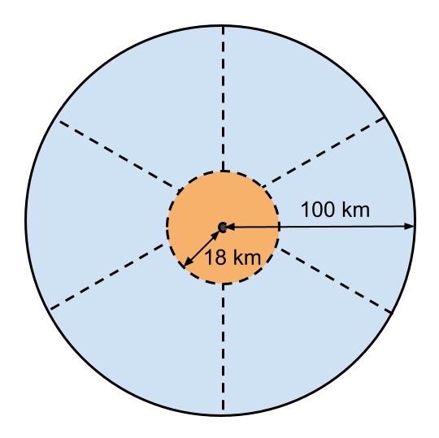

Technical Specification Group Radio Access Network;
Solutions for NR to support non-terrestrial networks (NTN):
Non-terrestrial networks (NTN) related RF and co-existence
aspects
(Release 17)
The present document has been developed within the 3rd
Generation Partnership Project (3GPP TM) and may be further
elaborated for the purposes of 3GPP.
The present document has not been subject to any approval process by the
3GPP Organizational Partners and shall not be implemented.
This Specification is provided for future development work within 3GPP
only. The Organizational Partners accept no liability for any use of
this Specification.
Specifications and Reports for implementation of the 3GPP TM
system should be obtained via the 3GPP Organizational Partners'
Publications Offices.
3GPP
Postal address
3GPP support office address
650 Route des Lucioles - Sophia Antipolis
Valbonne - FRANCE
Tel.: +33 4 92 94 42 00 Fax: +33 4 93 65 47 16
Internet
http://www.3gpp.org
Copyright
Notification
No part may be reproduced except as authorized by written
permission.
The copyright and the foregoing restriction extend to reproduction in
all media.
UMTS™ is a Trade Mark of ETSI registered for the benefit of its
members
3GPP™ is a Trade Mark of ETSI registered for the benefit of its
Members and of the 3GPP Organizational Partners
LTE™ is a Trade Mark of ETSI registered for the benefit of its Members
and of the 3GPP Organizational Partners
GSM® and the GSM logo are registered and owned by the GSM
Association
This Technical Report has been produced by the 3rd Generation
Partnership Project (3GPP).
The contents of the present document are subject to continuing work
within the TSG and may change following formal TSG approval. Should the
TSG modify the contents of the present document, it will be re-released
by the TSG with an identifying change of release date and an increase in
version number as follows:
Version x.y.z
where:
x the first digit:
1 presented to TSG for information;
2 presented to TSG for approval;
3 or greater indicates TSG approved document under change
control.
y the second digit is incremented for all changes of substance, i.e.
technical enhancements, corrections, updates, etc.
z the third digit is incremented when editorial only changes have
been incorporated in the document.
In the present document, modal verbs have the following meanings:
shall indicates a mandatory requirement to do
something
shall not indicates an interdiction (prohibition) to
do something
The constructions "shall" and "shall not" are confined to the context
of normative provisions, and do not appear in Technical Reports.
The constructions "must" and "must not" are not used as substitutes
for "shall" and "shall not". Their use is avoided insofar as possible,
and they are not used in a normative context except in a direct citation
from an external, referenced, non-3GPP document, or so as to maintain
continuity of style when extending or modifying the provisions of such a
referenced document.
should indicates a recommendation to do
something
should not indicates a recommendation not to do
something
may indicates permission to do something
need not indicates permission not to do
something
The construction "may not" is ambiguous and is not used in normative
elements. The unambiguous constructions "might not" or "shall not" are
used instead, depending upon the meaning intended.
can indicates that something is possible
cannot indicates that something is impossible
The constructions "can" and "cannot" are not substitutes for "may"
and "need not".
will indicates that something is certain or expected
to happen as a result of action taken by an agency the behaviour of
which is outside the scope of the present document
will not indicates that something is certain or
expected not to happen as a result of action taken by an agency the
behaviour of which is outside the scope of the present document
might indicates a likelihood that something will
happen as a result of action taken by some agency the behaviour of which
is outside the scope of the present document
might not indicates a likelihood that something will
not happen as a result of action taken by some agency the behaviour of
which is outside the scope of the present document
In addition:
is (or any other verb in the indicative mood)
indicates a statement of fact
is not (or any other negative verb in the indicative
mood) indicates a statement of fact
The constructions "is" and "is not" do not indicate requirements.
1 Scope
The present document covers the RF and co-existence aspects of the
work item “Solutions for NR to support non-terrestrial networks (NTN)”
[2]
The objectives for the study are the following:
- Study and specify adjacent channel co-existence scenarios of
Non-terrestrial networks (NTN).
- Study and specify needed generic RF core requirements for the
network and the UE such that adjacent channel co-existence scenarios are
met.
NOTE: Satellite operation is used as complementarily to Terrestrial
Network operation, and in separate location when satellite operates in
an adjacent channel/band of terrestrial network. For instance, NTN
satellite UE is assumed to connect and transmit to the satellite when it
is outside a Terrestrial Network operating in an adjacent channel/band.
The satellite beam might still overlap the terrestrial network.
2 Reference
The following documents contain provisions which, through reference
in this text, constitute provisions of the present document.
- References are either specific (identified by date of publication,
edition number, version number, etc.) or non‑specific.
- For a specific reference, subsequent revisions do not apply.
- For a non-specific reference, the latest version applies. In the
case of a reference to a 3GPP document (including a GSM document), a
non-specific reference implicitly refers to the latest version of that
document in the same Release as the present document.
[1] 3GPP TR 21.905: "Vocabulary for 3GPP Specifications".
[2] 3GPP RP-213691: "Revised WID: Solutions for NR to support
non-terrestrial networks (NTN)".
[3] ITU-R Radio Regulations, 2020 Edition
[4] ECC Decision 06(09): "Designation of the bands 1980-2010 MHz and
2170-2200 MHz for use by systems in the Mobile-Satellite Service
including those supplemented by a Complementary Ground Component (CGC)",
Approved 01 December 2006, Amended 05 September 2007,
[5] 3GPP TR 38.811: "Study on New Radio (NR) to support
non-terrestrial networks".
[6] 3GPP TR 38.821: "Solutions for NR to support Non-Terrestrial
Networks (NTN)".
[7] 3GPP RP-152284: "Revised Work Item: Narrowband IoT ".
[8] 3GPP TR 36.942: "Evolved Universal Terrestrial Radio Access
(E-UTRA); Radio Frequency (RF) system scenarios".
[9] 3GPP TR 45.820: "Cellular system support for ultra-low complexity
and low throughput Internet of Things (CIoT)".
[10] 3GPP TR 38.901: "Study on channel model for frequencies from 0.5
to 100 GHz".
[11] Report ITU-R M.2292: "Characteristics of terrestrial
IMT-Advanced systems for frequency sharing/interference analyses".
[12] 3GPP RP-200559: "LS on Parameters of terrestrial component of
IMT for sharing and compatibility studies in preparation for WRC-23
(below 5 GHz) ".
[13] ITU-R Annex 4.4 to Document 5D/716-E.
[14] 3GPP TR 38.921: "Study on International Mobile
Telecommunications (IMT) parameters for 6.425 - 7.025 GHz, 7.025 - 7.125
GHz and 10.0 - 10.5 GHz".
[15] 3GPP TR 36.802: "Evolved Universal Terrestrial Radio Access
(E-UTRA); NB-IOT; Technical Report for BS and UE radio transmission and
reception".
[16] 3GPP TS 38.104: "NR; Base Station (BS) radio transmission and
reception".
[17] 3GPP TS 38.101-1: "NR; User Equipment (UE) radio transmission
and reception; Part 1: Range 1 Standalone".
[18] 3GPP R4-2111460: "On the Rx Parameters and Rx Testing Setup for
NTN gNB".
[19] 3GPP R4-2108099: "WF on [312] NTN_Solutions_Part1".
[20] FCC Online Table of Frequency Allocations, 47 C.F.R § 2.106,
February 1, 2021.
[21] FCC Order 03-15, Report and Order and Notice of Proposed Rule
Making, January 29, 2003.
[22] FCC Order 20-48, Order and Authorization, April 19, 2020.
[23] FCC Code of Federal Regulations.
[24] SoftBank, Loon LLC, Nokia, Ericsson, “Proposed deployment and
system characteristics of HIBS in the working document towards a
preliminary draft new Report ITU-R M.[HIBS-CHARACTERISTICS],” ITU WP-5D
contribution, Sep. 28, 2020.
[26] 3GPP TS 38.108: "NR; Satellite Node radio transmission and
reception".
[27] 3GPP R4-213618: "Moderator’s summary of discussion
[94e-41-R17-NRNTN-RAN4Spec] ".
[28] ERC Recommendation 74-01: "Unwanted emissions in the spurious
domain".
[29] Recommendation ITU-R SM.1541-6: "Unwanted emissions in the
out-of-band domain".
[30] Recommendation ITU-R SM.329: "Unwanted emissions in the spurious
domain".
[31] 3GPP TR 38.817-02: "General aspects for Base Station (BS) Radio
Frequency (RF) for NR".
[32] 3GPP TR 38.817-01: " General aspects for User Equipment (UE)
Radio Frequency (RF) for NR".
3 Definition of
terms, symbols and abbreviations
3.1 Terms
For the purposes of the present document, the terms and definitions
given in TR 21.905 [1] and the following apply. A term defined in the
present document takes precedence over the definition of the same term,
if any, in TR 21.905 [1].
Feeder link: Wireless link between NTN-Gateway and
satellite
Geostationary Earth Orbit: Circular orbit at 35,786
km above the Earth's equator and following the direction of the Earth's
rotation. An object in such an orbit has an orbital period equal to the
Earth's rotational period and thus appears motionless, at a fixed
position in the sky, to ground observers.
Geosynchronous Orbit: Earth-centered orbit at
approximately 35786 kilometres above Earth's surface and synchronised
with Earth's rotation. A geostationary orbit is a non-inclined
geosynchronous orbit, i.e. in the Earth’s equator plane.
Low Earth Orbit: Orbit around the Earth with an
altitude between 300 km, and 1500 km.
Minimum Elevation angle: Minimum angle under which
the satellite or HAPS can be seen by a UE.
Non-Geostationary Satellites: Satellites (LEO and
MEO) orbiting around the Earth with a period that varies approximately
between 1.5 hour and 10 hours. It is necessary to have a constellation
of several Non-Geostationary satellites associated with handover
mechanisms to ensure a service continuity.
Non-terrestrial networks: Networks, or segments of
networks, using an airborne or space-borne vehicle to embark a
transmission equipment relay node or base station.
NTN-Gateway: An earth station or gateway is located
at the surface of Earth, and providing sufficient RF power and RF
sensitivity for accessing to the satellite (resp. HAPS).
Satellite: A space-borne vehicle embarking a bent
pipe payload or a regenerative payload telecommunication transmitter,
placed into Low-Earth Orbit (LEO), Medium-Earth Orbit (MEO), or
Geostationary Earth Orbit (GEO).
Service link: Radio link between satellite and
UE
Transparent payload: Payload that changes the
frequency carrier of the UL/DL RF signal, filters and amplifies it
before transmitting it on the DL/UL, respectively.
UE transmission bandwidth configuration: Set of
resource blocks located within the UE channel bandwidth which may be
used for transmitting or receiving by the UE.
User Throughput: data rate provided to a
terminal
3.2 Symbols
For the purposes of the present document, the following symbols
apply:
ΔFRaster Band dependent channel raster
granularityΔFGlobal Granularity of the global frequency
raster
ΔFRaster Band dependent channel raster granularity
BWChannel Channel bandwidth
BWinterferer Bandwidth of the interferer
FDL_low The lowest frequency of the downlink operating
band
FDL_high The highest frequency of the downlink
operating band
FUL_low The lowest frequency of the uplink operating
band
FUL_high The highest frequency of the uplink operating
band
FInterferer Frequency of the interferer
FInterferer (offset) Frequency offset of the interferer
(between the center frequency of the interferer and the carrier
frequency of the carrier measured)
FIoffset Frequency offset of the interferer (between the
center frequency of the interferer and the closest edge of the carrier
measured)
FOOB The boundary between the NR out of band emission and
spurious emission domains
FREF RF reference frequency
FREF-Offs Offset used for calculating FREF
Fuw (offset) The frequency separation of the center
frequency of the carrier closest to the interferer and the center
frequency of the interferer
NRB Transmission bandwidth configuration, expressed in
units of resource blocks NREF NR Absolute Radio Frequency
Channel Number (NR-ARFCN)
NREF NR Absolute Radio Frequency Channel Number
(NR-ARFCN)
NREF-Offs Offset used for calculating NREF
PInterferer Modulated mean power of the interferer
Puw Power of an unwanted DL signal
3.3 Abbreviations
For the purposes of the present document, the abbreviations given in
3GPP TR 21.905 [1] and the following apply. An abbreviation defined in
the present document takes precedence over the definition of the same
abbreviation, if any, in 3GPP TR 21.905 [1].
ACLR Adjacent Channel Leakage Ratio
ACS Adjacent Channel Selectivity
A-MPR Additional Maximum Power Reduction
BS Base Station
BW Bandwidth
BWP Bandwidth Part
CG Carrier Group
CP-OFDM Cyclic Prefix-OFDM
CW Continuous Wave
DFT-s-OFDM Discrete Fourier Transform-spread-OFDM
DM-RS Demodulation Reference Signal
DTX Discontinuous Transmission
EIRP Equivalent Isotropically Radiated Power
EVM Error Vector Magnitude
FR Frequency Range
FRC Fixed Reference Channel
FRF Frequency Reuse Factor
FSS Fixed Satellite Services
FWA Fixed Wireless Access
GEO Geostationary Earth Orbiting
gNB next Generation Node B
GW Gateway
GSCN Global Synchronization Channel Number
HAPS High Altitude Platform Station
HIPS HAPS as IMT Base Stations
IBB In-band Blocking
IDFT Inverse Discrete Fourier Transformation
ISL Inter-Satellite Links
ITU‑R Radiocommunication Sector of the International
Telecommunication Union
LEO Low Earth Orbiting
Mbps Mega bit per second
MBW Measurement bandwidth defined for the protected band
MCG Master Cell Group
MEO Medium Earth Orbiting
MOP Maximum Output Power
MPR Allowed maximum power reduction
MS Mobile Services
MSD Maximum Sensitivity Degradation
MSS Mobile Satellite Services
NGEO Non-Geostationary Earth Orbiting
NR New Radio
NR-ARFCN NR Absolute Radio Frequency Channel Number
NS Network Signalling
NTN Non-Terrestrial Network
OCNG OFDMA Channel Noise Generator
OOB Out-of-band
P-MPR Power Management Maximum Power Reduction
PRB Physical Resource Block
PSCCH Physical Sidelink Control CHannel
PSSCH Physical Sidelink Shared CHannel
QAM Quadrature Amplitude Modulation
RAN Radio Access Network
RE Resource Element
REFSENS Reference Sensitivity
RF Radio Frequency
RMS Root Mean Square (value)
RSRP Reference Signal Receiving Power
Rx Receiver
SAN Satellite Access Node
SC Single Carrier
SCG Secondary Cell Group
SCS Subcarrier spacing
SEM Spectrum Emission Mask
SNR Signal-to-Noise Ratio
SRS Sounding Reference Symbol
SS Synchronization Symbol
TAE Time Alignment Error
TAG Timing Advance Group
Tx Transmitter
TxD Tx Diversity
UE User Equipment
ULFPTx Uplink Full Power Transmission
4 General aspects
4.1 Work item objectives
The Work item objectives are captured in [2].
5 Regulatory aspects
5.1 ITU-R
The following services are among those defined in the ITU-R Radio
Regulations [3]:
- Fixed (1.20): A radiocommunication service between specified fixed
points.
- Fixed satellite (1.21) : A radiocommunication service between earth
stations at given positions, when one or more satellites are used; the
given position may be a specified fixed point or any fixed point within
specified areas; in some cases this service includes
satellite-to-satellite links, which may also be operated in the
inter-satellite service; the fixed-satellite service may also include
feeder links for other space radiocommunication services.
- Mobile (1.24): radiocommunication service between mobile and land
stations, or between mobile stations (CV).
- Mobile satellite (1.25): A radiocommunication service:
- between mobile earth stations and one or more space stations, or
between space stations used by this service; or
- between mobile earth stations by means of one or more space
stations.
This service may also include feeder links necessary for its
operation.
Based on the ITU-R Radio Regulations [3], the following frequency
ranges are allocated to MSS and have been identified as first candidate
bands for NTN satellite operations:
For providing mobile services through HAPS, current ITU-R Radio
Regulations [3] allow the use of frequency ranges 1885–1980 MHz,
2010-2025 MHz and 2110–2170 MHz by HAPS. Additional spectrum may be
allocated for HAPS in 2023 (see clause 5.3).
The ITU-R Radio Regulations [3] specify the following service
allocation for those frequency ranges, shown in Table 5.2.1-1:
Table 5.2.1-1: Allocation of 1980–2010 MHz and 2170–2200 MHz in the
ITU-R Radio Regulations
Allocation to services
Region 1
Region 2
Region 3
2 170-2 200 FIXED
MOBILE
MOBILE-SATELLITE (space-to-Earth) 5.351A
5.388 5.389A 5.389F
1 980-2 010 FIXED
MOBILE
MOBILE-SATELLITE (Earth-to-space) 5.351A
5.388 5.389A 5.389B 5.389F
5.351A: For the use of the bands 1 518-1 544 MHz, 1
545-1 559 MHz, 1 610-1 645.5 MHz, 1 646.5-1 660.5 MHz,1 668- 1 675 MHz,
1 980-2 010 MHz, 2 170-2 200 MHz, 2 483.5-2 520 MHz and 2 670-2 690 MHz
by the mobile satellite service, see Resolutions 212 (Rev.WRC-07)* and
225 (Rev.WRC-07)**.
* This Resolution was revised by WRC-15 and WRC-19.
** This Resolution was revised by WRC-12.
5.388: The frequency bands 1 885-2 025 MHz and 2 110-2 200 MHz are
intended for use, on a worldwide basis, by administrations wishing to
implement International Mobile Telecommunications (IMT). Such use does
not preclude the use of these frequency bands by other services to which
they are allocated. The frequency bands should be made available for IMT
in accordance with Resolution 212 (Rev.WRC-15)* (see also Resolution 223
(Rev.WRC-15)*). (WRC-15)
* This Resolution was revised by WRC-19.
5.389A: The use of the bands 1 980-2 010 MHz and 2 170-2 200 MHz by
the mobile-satellite service is subject to coordination under No. 9.11A
and to the provisions of Resolution 716 (Rev.WRC-2000)**.
** This Resolution was revised by WRC-12.
5.389B: The use of the frequency band 1 980-1 990 MHz by the
mobile-satellite service shall not cause harmful interference to or
constrain the development of the fixed and mobile services in Argentina,
Brazil, Canada, Chile, Ecuador,the United States, Honduras, Jamaica,
Mexico, Paraguay, Peru, Suriname, Trinidad and Tobago, Uruguay and
Venezuela. (WRC-19)
5.389F: In Algeria, Cape Verde, Egypt, Iran (Islamic Republic of),
Mali, Syrian Arab Republic and Tunisia, the use of the frequency bands 1
980-2 010 MHz and 2 170-2 200 MHz by the mobile-satellite service shall
neither cause harmful interference to the fixed and mobile services, nor
hamper the development of those services prior to 1 January 2005, nor
shall the former service request protection from the latter services.
(WRC-19)
Following Figure 5.2.1-1 gives an overview of the NR TN bands
adjacent to the NTN n256 band.
Figure 5.2.1-1: Adjacent TN bands to NTN band n256
As shown in Figure 5.2.1-1, the NTN satellite band is adjacent to NR
bands n1 (FDD) and n34 (TDD). The bands need to be protected and
co-existence analysis is required to determine the Adjacent Channel
Interference Ratio (ACIR) and in-band power levels.
Also, the NTN band n256 will fully be overlapped by TN NR bands n65
and partly overlapped by TN NR bands n2, n25, n70 and n66, limiting band
n256 deployment accordingly to countries where n2, n25 and/or n70 are
not deployed or regional regulation applies.
Per ECC Decision 06(09) [4], n256 and Complementary Ground Component
(CGC) could operate simultaneously in the upper 30 MHz portion of n65 in
CEPT countries.
The ITU-R Radio Regulations [3] specify the following service
allocation for frequency ranges 1525 – 1559 MHz and 1626.5 – 1660.5 MHz
as shown in Table 5.2.2-1.
Table 5.2.2-1: Allocation of 1525 –1559 MHz and 1626.5 – 1660.5 MHz
in the ITU-R Radio Regulations
The details of the notes 5.208B, 5.341, 5.342, 5.350,
5.351, 5.351A, 5.352A, 5.353A, 5.354, 5.355, 5.356, 5.357, 5.357A,
5.359, 5.362A, 5.374, 5.375 and 5.376A related to MOBILE-SATELLITE
service can be found in [3].
FCC’s specifies the following service allocation for frequency ranges
1525 – 1559 MHz and 1626.5 – 1660.5 MHz in USA[20] as shown in Table
5.2.2-2.
Table 5.2.2-2: Allocation of 1525 –1559 MHz and 1626.5 – 1660.5 MHz
in the US
The details of the notes 5.341, 5.351, 5.356, 5.375,
US308, US309, US315 and US342 related to MOBILE-SATELLITE service can be
found in [20].
US380 In the bands 1525-1544 MHz, 1545-1559 MHz, 1610-1645.5 MHz,
1646.5-1660.5 MHz, and 2483.5-2500 MHz, a non-Federal licensee in the
mobile-satellite service (MSS) may also operate an ancillary terrestrial
component in conjunction with its MSS network, subject to the
Commission’s rules for ancillary terrestrial components and subject to
all applicable conditions and provisions of its MSS
authorization.
NOTE: DL operation in band n24 is restricted to 1526-1536MHz and UL
operation is restricted to 1627.5-1637.5MHz and 1646.5-1656.5MHz
Figure 5.2.2-1: Adjacent TN bands to NTN band n255
As shown in Figure 5.2.2-1, the NTN satellite band is not adjacent to
any TN NR or LTE bands. The edge-to-edge separation for nearest TN band,
n74 DL, is 7 MHz.
Also, the NTN band n255 fully overlaps with TN NR bands n24 and SUL
NR band n99. Per note US380 in Table 5.2.2-2 simultaneous operation of
n24/n99 and n255 is allowed in USA. Commission’s authorization and
technical rules for TN can be found in FCC Orders 03-15 [21] and 20-48
[22] respectively. Commission’s technical rules for its MSS
authorization can be found in FCC 47 C.F.R Part 25.
Technical rules for NTN SAN and UEs operating in 1 to 3 GHz from
FCC’s 47 C.F.R. § 25.202 [23] are summarized below:
47 C.F.R. § 25.202:
(d) Frequency tolerance, Earth stations. The carrier
frequency of each earth station transmitter authorized in these services
shall be maintained within 0.001 percent of the reference
frequency.
(e) Frequency tolerance, space stations. The carrier
frequency of each space station transmitter authorized in these services
shall be maintained within 0.002 percent of the reference frequency.
47 C.F.R. § 25.202 (f):
Emission limitations. Except for SDARS terrestrial repeaters
and as provided for in paragraph (i), the mean power of emissions shall
be attenuated below the mean output power of the transmitter in
accordance with the schedule set forth in paragraphs
(f)(1) through (f)(4) of
this section. The out-of-band emissions of SDARS terrestrial repeaters
shall be attenuated in accordance with the schedule set forth in paragraph
(h) of this section.
(1) In any 4 kHz band, the center frequency of which is removed from
the assigned frequency by more than 50 percent up to and including 100
percent of the authorized bandwidth: 25 dB;
(2) In any 4 kHz band, the center frequency of which is removed from
the assigned frequency by more than 100 percent up to and including 250
percent of the authorized bandwidth: 35 dB;
(3) In any 4 kHz band, the center frequency of which is removed from
the assigned frequency by more than 250 percent of the authorized
bandwidth: An amount equal to 43 dB plus 10 times the logarithm (to the
base 10) of the transmitter power in watts;
(4) In any event, when an emission outside of the authorized
bandwidth causes harmful interference, the Commission may, at its
discretion, require greater attenuation than specified in paragraphs
(f) (1), (2) and (3) of
this section.
47 C.F.R. § 25.216:
(a) The e.i.r.p. density of emissions from mobile earth stations
placed in service on or before July 21, 2002 with assigned uplink
frequencies between 1610 MHz and 1660.5 MHz shall not exceed −70
dBW/MHz, averaged over any 2 millisecond active transmission interval,
in the band 1559-1587.42 MHz. The e.i.r.p. of discrete emissions of less
than 700 Hz bandwidth generated by such stations shall not exceed −80
dBW, averaged over any 2 millisecond active transmission interval, in
that band.
(b) The e.i.r.p. density of emissions from mobile earth stations
placed in service on or before July 21, 2002 with assigned uplink
frequencies between 1610 MHz and 1626.5 MHz shall not exceed −64
dBW/MHz, averaged over any 2 millisecond active transmission interval,
in the band 1587.42-1605 MHz. The e.i.r.p. of discrete emissions of less
than 700 Hz bandwidth generated by such stations shall not exceed −74
dBW, averaged over any 2 millisecond active transmission interval, in
the 1587.42-1605 MHz band.
(c) The e.i.r.p. density of emissions from mobile earth stations
placed in service after July 21, 2002 with assigned uplink frequencies
between 1610 MHz and 1660.5 MHz shall not exceed −70 dBW/MHz, averaged
over any 2 millisecond active transmission interval, in the band
1559-1605 MHz. The e.i.r.p. of discrete emissions of less than 700 Hz
bandwidth from such stations shall not exceed −80 dBW, averaged over any
2 millisecond active transmission interval, in the 1559-1605 MHz
band.
(d) As of January 1, 2005, the e.i.r.p. density of emissions from
mobile earth stations placed in service on or before July 21, 2002 with
assigned uplink frequencies between 1610 MHz and 1660.5 MHz (except
Standard A and B Inmarsat terminals used as Global Maritime Distress and
Safety System ship earth stations) shall not exceed −70dBW/MHz, averaged
over any 2 millisecond active transmission interval, in the 1559-1605
MHz band. The e.i.r.p. of discrete emissions of less than 700 Hz
bandwidth from such stations shall not exceed −80 dBW, averaged over any
2 millisecond active transmission interval, in the 1559-1605 MHz band.
Standard A Inmarsat terminals used as Global Maritime Distress and
Safety System ship earth stations that do not meet the e.i.r.p. density
limits specified in this paragraph may continue operation until December
31, 2007. Inmarsat-B terminals manufactured more than six months
after Federal Register publication of the rule changes adopted in FCC
03-283 must meet these limits. Inmarsat B terminals manufactured before
then are temporarily grandfathered under the condition that no
interference is caused by these terminals to aeronautical satellite
radio-navigation systems. The full-compliance deadline for grandfathered
Inmarsat-B terminals is December 31, 2012.
(e) The e.i.r.p density of emissions from mobile earth stations with
assigned uplink frequencies between 1990 MHz and 2025 MHz shall not
exceed −70 dBW/MHz, averaged over any 2 millisecond active transmission
interval, in frequencies between 1559 MHz and 1610 MHz. The e.i.r.p. of
discrete emissions of less than 700 Hz bandwidth from such stations
between 1559 MHz and 1605 MHz shall not exceed −80 dBW, averaged over
any 2 millisecond active transmission interval. The e.i.r.p. of discrete
emissions of less than 700 Hz bandwidth from such stations between 1605
MHz and 1610 MHz manufactured more than six months after Federal
Register publication of the rule changes adopted in FCC 03-283 shall not
exceed −80 dBW, averaged over any 2 millisecond active transmission
interval.
(f) Mobile earth stations placed in service after July 21, 2002 with
assigned uplink frequencies in the 1610-1660.5 MHz band shall suppress
the power density of emissions in the 1605-1610 MHz band to an extent
determined by linear interpolation from −70 dBW/MHz at 1605 MHz to −10
dBW/MHz at 1610 MHz.
(g) Mobile earth stations manufactured more than six months
after Federal Register publication of the rule changes adopted in FCC
03-283 with assigned uplink frequencies in the 1610-1626.5 MHz band
shall suppress the power density of emissions in the 1605-1610 MHz
band-segment to an extent determined by linear interpolation from −70
dBW/MHz at 1605 MHz to −10 dBW/MHz at 1610 MHz averaged over any 2
millisecond active transmission interval. The e.i.r.p of discrete
emissions of less than 700 Hz bandwidth from such stations shall not
exceed a level determined by linear interpolation from −80 dBW at 1605
MHz to −20 dBW at 1610 MHz, averaged over any 2 millisecond active
transmission interval.
(h) Mobile earth stations manufactured more than six months
after Federal Register publication of the rule changes adopted in FCC
03-283 with assigned uplink frequencies in the 1626.5-1660.5 MHz band
shall suppress the power density of emissions in the 1605-1610 MHz
band-segment to an extent determined by linear interpolation from −70
dBW/MHz at 1605 MHz to −46 dBW/MHz at 1610 MHz, averaged over any 2
millisecond active transmission interval. The e.i.r.p of discrete
emissions of less than 700 Hz bandwidth from such stations shall not
exceed a level determined by linear interpolation from −80 dBW at 1605
MHz to −56 dBW at 1610 MHz, averaged over any 2 millisecond active
transmission interval.
(i) The e.i.r.p density of carrier-off state emissions from mobile
earth stations manufactured more than six months after Federal
Register publication of the rule changes adopted in FCC 03-283 with
assigned uplink frequencies between 1 and 3 GHz shall not exceed −80
dBW/MHz in the 1559-1610 MHz band averaged over any two millisecond
interval.
(j) A Root-Mean-Square detector shall be used for all power density
measurements.
For L-band NTN satellite operation in the US, additional spectrum
emission requirements in 47 C.F.R § 25.216 (h) need to be specified for
L-band NTN satellite UE. This can be captured as part of additional
spurious emission requirements which allows inclusion of frequency
ranges that are less than FOOB (MHz) from the edge of the
channel bandwidth.
5.3 Regulatory aspects for
HAPS
ITU–R began to study HAPS in the 1990s initially for fixed services.
The telecommunications ecosystem and technology enablers for HAPS have
evolved significantly since then. At WRC-2000, the bands 1885 – 1980
MHz, 2010 – 2025 MHz and 2110 – 2170 MHz were identified for HAPS
operating as IMT Base Stations, in accordance with Resolution 221
(Rev.WRC-07) [3]. With increasing interest in HAPS to offer mobile
services, the WRC-19 agreed to study certain frequency bands which have
been already identified for IMT below 2.7 GHz for HAPS as IMT Base
Stations (HIBS). ITU-R Working Party 5D is currently studying
co-existence requirements for HIBS in the additional three bands listed
in Table 5.4-1 to support spectrum identification decisions in WRC-23 in
accordance with Resolution 247 (WRC-19) [3].
NOTE: In the current ITU terminology, the use of HAPS to implement
IMT (i.e. offer mobile wireless services) is referred to as “HAPS as IMT
Base Stations” or HIBS.
Table 5.4-1: Frequencies for HAPS as IMT Base Stations (HIBS).
Region
Spectrum
Remarks
Region 1 and 3
1885 – 1980 MHz
2010 – 2025 MHz
2110 – 2170 MHz
Identified HIBS designations at WRC-2000
Region 2
1885 – 1980 MHz3
2110 – 2160 MHz4
Global
694 – 960 MHz
1710 – 1885 MHz1
2500 – 2690 MHz2
Under study, for decision at WRC-23
NOTE 1: 1710-1815 MHz to be used for uplink only in
Region 3.
NOTE 2: 2500-2535 MHz to be used for uplink only in Region 3, except
2655-‑2690 MHz in Region 3).
NOTE 3: In most of Region 2 1885-1910 is used for Mobile uplink and
1930-1980 is used for Mobile downlink. In the United States, 1910-1915
and 1915-1920 are also used for Mobile uplink.
NOTE 4: In Region 2 2110-2160 is used for Mobile downlink.
6 Co-existence study
6.1 Co-existence simulation
scenario
Scenarios for coexistence study are listed in Table 6.1-1.
Table 6.1-1: Scenarios for NTN-NTN/TN co-existence
FR1: 2GHz
NTN1,4,5
Set 1
Set 22
HAPS
GEO3
LEO 600km
LEO 1200km
GEO
LEO 600km
LEO 1200km
NR / NB-IoT
Rural
X
X
X
X
X
X
X
Urban macro
X
X
X
X
X
X
X
Dense Urban6
N/A
N/A
N/A
N/A
N/A
N/A
N/A
HAPS
N/A
N/A
N/A
N/A
N/A
N/A
X
NOTE 1: Earth Fixed beam has been considered for
co-existence studies.
NOTE 2: Use Set 1 satellite antenna has been used as the starting
point for co-existence studies.
NOTE 3: GEO and LEO only operate at adjacent channel.
NOTE 4: Use GEO and LEO@600km when TN is victim.
NOTE 5: The satellite-to-satellite coexistence scenarios are not in
the scope of this study considering this is already addressed by ITU
(ITU RR Article 9 etc.) and regional regulations (e.g. FCC rules).
NOTE 6: Dense Urban is not considered as it is expected NTN UE will
connect to terrestrial networks rather than satellite networks in such
scenario.
The aggressor and victim combinations are listed in Table 6.1-2.
Table 6.1-2: Aggressor and victim
No.
Combination
Aggressor
Victim
Notes
Study Phase
1
TN with NTN
TN DL
NTN DL
Applicable for satellite operating in e.g. S-band, for e.g.
coexistence with n1 FDD.
Phase 1
2
TN with NTN
TN UL
NTN UL
Applicable for satellite operating in e.g. S-band, for e.g.
coexistence with n1 FDD.
Phase 1
3
TN with NTN
NTN DL
TN DL
Applicable for satellite operating in e.g. S-band, for e.g.
coexistence with n1 FDD.
Phase 1
4
TN with NTN
NTN UL
TN UL
Applicable for satellite operating in e.g. S-band, for e.g.
coexistence with n1 FDD.
Phase 1
5
TN with NTN
NTN UL
TN DL
Applicable for satellite operating in S-band, for e.g. coexistence
with n34 TDD.
Phase 1
6
TN with NTN
TN DL
NTN UL
Applicable for satellite operating in S-band, for e.g. coexistence
with n34 TDD.
Phase 1
7
NTN with NTN
NTN DL
NTN DL
HAPS-HAPS
Phase 2
NTN UL
NTN UL
HAPS-HAPS
Phase 2
For further visualisation, the interference charts with respect to
scenarios 1 to 6 are further represented with respect to NTN-TN
coexistence scenarios in Figure 6.1-1 (scenarios 1 to 4) and Figure
6.1-2 (scenarios 5 and 6).
Figure 6.1-1: S-band NTN-TN adjacent band coexistence scenarios with
TN in FDD mode
Figure 6.1-2: S-band NTN-TN adjacent band coexistence scenarios with
TN in TDD mode (e.g. n34)
The frequency and bandwidth are listed in Table 6.1-3.
Table 6.1-3: Proposed frequency and bandwidth for co-existence
study
Frequency
Bandwidth
Duplex mode
Frequency reuse factor
TN Rural
2 GHz
20MHz
FDD, TDD
1
TN Urban macro
2 GHz
20MHz
FDD, TDD
1
GEO
2 GHz
5/10/15/20 MHz for FR1
FDD
1, 31
LEO
2 GHz
5/10/15/20 MHz for FR1
FDD
1, 31
HAPS
2 GHz
TBD
FDD
1
NOTE: Only FRF=1 has been used in co-existence studies
for simplification.
6.2 Co-existence simulation
assumption
6.2.1 Network layout model
6.2.1.1 Co-existence
between NTN satellite and TN
Cellular cell structure is considered for both NTN satellite and TN
network layout.
Referring to TR 38.811[5] Section 6.3 and Annex A, a 3D global
coordinate system is considered (Earth-Centred Earth Fixed) for
simulating NTN satellite beams direction and location on the earth
surface. It means the NTN satellite beam location, TN randomly dropping
location are generated with a set of three parameters (x,y,z).
Deployment of NTN satellite and TN cells and UEs for co-existence
study is listed in Table 6.2.1.1-1.
NOTE: The NTN UE(s) shall be dropped at the edge of the “central 19
TN cells (cluster)”. For Case 1 (Urban scenario), an Isolation distance
of 1500m as 2*ISD is considered to reflect the NTN-TN selection
algorithm at the border, assuming TN connection will always be
prioritized over NTN.
As defined in Figure 6.2.1.1-1, isolation distance is the distance
between the blue-dotted line which represents TN cell boarder and the
red line. No UEs deployed in the isolation region is assumed to reduce
the calculation complexity.
Figure 6.2.1.1-1: Isolation distance for Case 1
Table 6.2.1.1-1: Network and UE deployment
No.
Combination
Aggressor
Victim
Which NTN cell/UE to observe?
Which TN/UE to observe?
Which TN cells in a TN to observe?
1
TN with NTN satellite
TN DL
NTN DL
NTN cell:
Observe NTN central beam for SINR, 6 adjacent beams for inter-beam
interference.
NTN UE:
NTN UEs dropped at the edge of TN clusters
One cluster with 19 TN cells (57 sectors) randomly placed in the
central NTN beam
All active TN clusters which has the NTN UE(s) at its edge.
2
TN with NTN satellite
TN UL
NTN UL
NTN cell:
Observe NTN central beam for SINR, 6 adjacent beams for inter-beam
interference.
NTN UE:
NTN UEs dropped at the edge of TN clusters
Consider an active rate of 20% for Rural and Urban of TN.
All active TN cells in central NTN beam
3
TN with NTN satellite
NTN DL
TN DL
NTN cell:
Nadir point.
NTN UE:
NTN UEs dropped outside or at the edge of TN clusters
TN clusters randomly placed in this NTN beam
All in central NTN beam
NTN cell:
NTN cell with satellite at low elevation (45° for GEO and
LEO，Interested companies can bring analysis and results for other
values)
NTN UE:
NTN UEs dropped outside or at the edge of TN clusters
TN clusters randomly placed in this NTN beam
4
TN with NTN satellite
NTN UL
TN UL
NTN cell:
Nadir point.
NTN UE:
NTN UEs dropped at the edge of TN clusters
TN randomly placed in this NTN beam
Option 1: All active TN clusters which has the NTN UE(s) at its
edge.
Option 2: Only the TN sectors which have NTN UE(s) at their
edges.
Option 1 is the baseline and it is not precluded companies can follow
Option 2 to bring results
5
TN with NTN satellite
NTN UL
TN DL
NTN cell:
Nadir point
NTN UE:
NTN UEs dropped at the edge of TN clusters
TN clusters randomly placed in this NTN beam
All active TN clusters which has the NTN UE(s) at its edge
NTN cell:
NTN cell with satellite at low elevation (45° for GEO and
LEO，Interested companies can bring analysis and results for other
values).
NTN UE:
NTN UEs dropped at the edge of TN clusters
TN clusters randomly placed in this NTN beam
All active TN clusters which has the NTN UE(s) at its edge.
6
TN with NTN satellite
TN DL
NTN UL
NTN cell:
Observe NTN central beam for SINR, 6 adjacent beams for inter-beam
interference.
NTN cell with satellite at low elevation to be further
investigated.
NTN UE:
NTN UEs dropped outside or at the edge of TN clusters
Consider the active rate of 20% for Rural and Urban of TN.
The Urban TN deployment for GEO in Case 6 is a mixture of urban and
rural TN deployment. A representative percentage of urban TN could be
considered for further study.
All active TN cells in central NTN beam
6.2.1.2 Co-existence between
HAPS and TN
For simulations of HAPS and TN co-existence, a cluster of TN cells is
randomly dropped in the HAPS coverage area as shown in Figure 6.2.1.2-1.
The TN cell cluster consists of 19 sites, 57 sectors, with the same
assumption described in clause 6.2.2.4. HAPS coverage and cell layout
are described in clause 6.2.2.3.
Figure 6.2.1.2-1: Simulation layout between HAPS and TN
6.2.1.3 Co-existence between
HAPS and HAPS
HAPS and HAPS co-existence can be characterized by “center-to-center”
inter-system distance (i.e., the distance between two coverage centers)
as depicted in Figure 6.2.1.3-1. Since HAPS location is at the center of
its coverage area, the inter-system distance is the separation of the
two HAPS. Different inter-system distances may be simulated to evaluate
the interference caused by antenna gain variation in the elevation
domain.
Figure 6.2.1.3-1: Simulation layout between HAPS and HAPS
6.2.2 System parameters
6.2.2.1 Satellite parameters
Two sets of satellite parameters are listed in Table 6.2.2.1-2 and
Table 6.2.2.1-3 according to TR 38.821[6].
The satellite max Tx power can be calculated by the equation as
below:
Table 6.2.2.1-1: NRB configuration per BandWidth size and
SCS
Configuration FR1 S-band
NRB (5MHz BW)
NRB (10MHz BW)
NRB (15MHz BW)
NRB (20MHz BW)
SCS 15 kHz
25
52
79
106
SCS 30 kHz
11
24
38
51
Table 6.2.2.1-2: Set-1 satellite parameters for co-existence
study
Satellite orbit
GEO
LEO-1200
LEO-600
Satellite altitude
35786 km
1200 km
600 km
Payload characteristics for DL transmissions
Satellite EIRP density
2GHz
59 dBW/MHz
40 dBW/MHz
34 dBW/MHz
Satellite max TX power in dBm
BW (MHz)
5
10
15
20
5
10
15
20
5
10
15
20
SCS 15kHz
44.53
47.71
49.53
50.81
46.53
49.71
51.53
52.81
40.53
43.71
45.53
46.81
SCS 30kHz
43.98
47.37
49.36
50.64
45.98
49.37
51.36
52.64
39.98
43.37
45.36
46.64
Satellite Tx max Gain
51 dBi
30 dBi
30 dBi
Channel bandwidth
5/10/15/20MHz
5/10/15/20MHz
5/10/15/20MHz
3dB beamwidth or HPBW (Half-Power BandWidth) of main
central beam
0.4011 deg
4.4127 deg
4.4127 deg
ABS (Adjacent Beam Spacing) of adjacent beams from the
central beam
0.3474 deg
3.8206 deg
3.8206 deg
Satellite beam diameter
250 km
90 km
50 km
Payload characteristics for UL transmissions
G/T
2 GHz
19 dB K-1
1.1 dB K-1
1.1 dB K-1
Satellite Rx max Gain
51 dBi
30 dBi
30 dBi
Table 6.2.2.1-3: Set-2 satellite parameters for co-existence
study
Satellite orbit
GEO
LEO-1200
LEO-600
Satellite altitude
35786 km
1200 km
600 km
Payload characteristics for DL transmissions
Satellite EIRP density
2GHz
53.5 dBW/MHz
34 dBW/MHz
28 dBW/MHz
Satellite Tx max Gain
45.5 dBi
24 dBi
24
Channel bandwidth
5/10/15/20MHz
5/10/15/20MHz
5/10/15/20MHz
3dB beamwidth
0.7353 deg
8.8320 deg
8.8320 deg
Satellite beam diameter
450 km
190 km
90 km
Payload characteristics for UL transmissions
G/T
2 GHz
14 dB K-1
-4.9 dB K-1
-4.9 dB K-1
Satellite Rx max Gain
45.5 dBi
24 dBi
24 dBi
Table 6.2.2.1-4: Other parameters for NTN satellite
Parameters
NTN satellite
Remark
Carrier frequency
2GHz
The number of active UE (UL)
9 UEs and 2RBs per UE for GEO and LEO1
NOTE
The number of active UE (DL)
1
Same with TN
Traffic model
Full buffer
DL power control
NO
UL power control
See Session 6.2.6.2
NTN satellite Noise Figure in dB
See Table 2.3-3-1
Handover margin
3dB
NOTE: UEs are equally splitted inside the channel
bandwidth into ACIR 3 regions. Scheduled PRB position for UE1 per
satellite beam should be also fully aligned to simulate the worst case
for co-channel interference and this is also aligned with full buffer
case.
Table 6.2.2.1-5: NTN satellite Noise Figure in dB
Satellite
GEO
LEO 600
LEO 1200
G/T (dB K-1)
19
1.1
1.1
G_Rx (dBi)
51
30
30
NF (dB)
7.4
4.3
4.3
6.2.2.2 NTN UE parameters
NTN UE parameters are given in Table 6.2.2.2-1
Table 6.2.2.2-1: NTN UE characteristics for system level
simulations
Characteristics
Handheld
Frequency band
S band (i.e. 2 GHz)
Antenna type and configuration
(1, 1, 2) with omni-directional antenna element
Polarisation
Linear: +/-45°X-pol
Rx Antenna gain
0 dBi per element
Antenna temperature
290 K
Noise figure
9 dB
Tx transmit power
200 mW (23 dBm)
Tx antenna gain
0 dBi per element
6.2.2.3 HAPS parameters
Using the antenna model in Section 6.2.3.3, HAPS deployed at 20 km
altitude has a coverage radius of 100 km in a 7-cell layout. Two
implementations of the layout are shown in Figure 6.2.2.3-1. The UEs in
the HAPS system are assumed to be outdoor and uniformly distributed in
the coverage area in the rural environment. The serving cell is selected
by the strongest RSRP or least coupling loss. (Note: Calibration data
show these two implementations yield similar results). HAPS system
parameters for the co-existence study are listed in Table 6.2.2.3-1.
For DL transmission, one UE is scheduled for the full bandwidth. For
UL transmission, 9 UEs are scheduled, each using a bandwidth of 6 RBs.
The scheduled UEs are evenly distributed in the frequency domain as
shown in Figure 6.2.2.3-2. Note that the scheduled resources are aligned
among different cells to model co-channel effect. Since the UE uses only
part of the channel bandwidth in UL, the ACI impact may differ in the
frequency domain of the adjacent channel. The ACIR model described in
Section 6.2.4 should be used to model the ACI from aggressor UEs in UL,
taking into account the UE’s transmission bandwidth.
(a)

(b)
Figure 6.2.2.3-1: HAPS cell layout
Table 6.2.2.3-1: HAPS system parameters
HAPS altitude
20 Km
Carrier frequency
2 GHz
Frequency reuse factor
1
Duplex scheme
FDD
Channel bandwidth
20 MHz
Subcarrier spacing (SCS)
15 KHz
Number of cells
7
Coverage area (7 cells combined)
A 100 Km radius circular area centered by
the serving HAPS
Frequency reuse
1
Environment1
Rural
UE distribution
Uniformly distributed in the coverage
area
Indoor UE percentage
0%
Number of DL scheduled UEs per cell
1
Number of UL scheduled UEs per cell
9
DL scheduled bandwidth per UE
20 MHz
UL scheduled bandwidth per UE
6 RBs
DL power control
No
UL power control
See section 6.2.6.3
HAPS antenna
See section 6.2.3.3
HAPS noise figure
5 dB
HAPS-UE pathloss model
See section 6.2.5.4
HAPS UE assumption
Same as TN UE in Table 6.2.2.4-1
NOTE 1: HAPS is assumed to
serve UEs in the rural environment, but the co-existed TN may be in the
rural or urban macro environment.
Figure 6.2.2.3-2: UL scheduled UE bandwidth allocation
6.2.2.4 TN parameters
TN parameters for co-existence study are given in Table 6.2.2.4-1,
6.2.2.4-2 and 6.2.2.4-3.
Table 6.2.2.4-1: Simulation assumptions of TN respectively based on
NB-IoT and NR
NB-IoT
standalone
NR
Carrier frequency in GHz
2
2
Size of each nominal channel BW in MHz
0.2
20
Transmission bandwidth in MHz
0.18
N/A
Environment
Urban macro
Rural
Deployment scenario related, see Table 6.2.2.4-2.
Network layout
19-sites [57 sectors] with wrap-around
19-sites 57 sectors with wrap-around
Inter-site distance in meter
500 for 2GHz band for UMA
TBD For Rural
Deployment scenario related, see Table 6.2.2.4-2
System loading and activity
Full buffer 100%
See Table 6.2.1.1-1
Network location
TBD
See Table 6.2.1.1-1
DL subcarrier spacing
15kHz
15kHz
UL
See RP-152284[7]
OFDMA
DL power control
No
No
UL power control
TR 36.942[8] section 5.1.1.6 (set 1) by bandwidth scale, target SNR
at BS is 15 dB
TR 36.942[8]
Frequency reuse
1
1
Number of scheduled UE per cell (DL)
1
1
Number of scheduled UE per cell (UL)
3 for multi-tone (60kHz per UE),
12 for 15kHz single-tone,
48 for 3.75kHz single-tone
3
UE antenna height in meter
1.5
1.5m
UE TX power in dBm
-40 to 23
-40 to 23
UE antenna gain in dBi
0
0
Building penetration loss
TR 45.820[9] Annex D.1
In pathloss model, TR 38.901[10]
Cell selection margin in dB
3
3
BS-MS min distance in meters
35
35
BS noise figure in dB
5
5
UE noise figure in dB
9
9
BS-UE path-loss model
TR 36.942[8] macro urban
TR 38.901[10]
Standard deviation of BS-UE log-normal shadow fading in dB
10
Deployment scenario related, referring to TR 38.901[10]
Shadowing correlation
Inter-cell 0.5
Intra-cell 1
Inter-cell 0.5
Intra-cell 1
Link-level performance model
See Section 6.2.8
Throughtput-SINR mapping
UE distribution
Uniform
Evaluation metrics
SINR vs ACS (as victim)
See Section 6.2.8
Throughtput or SNR loss criteria
Table 6.2.2.4-2: Deployment-related parameters of TN (2 GHz)
Urban Macro
Rural Macro
Remarks
ISD in meters
750
7500
ITU-R Report M.2292[11]
BS Antenna height in meters
25
30
UE Outdoor/indoor
100% Outdoor
UE height in meter
1.5
1.5
RP-200559 [12] 3GPP LS to ITU-R WP5D
and
ITU-R WP5D
[IMT_Parameters] [13]
Table 6.2.2.4-3: ACLR/ACS for TN (2GHz)
NR
NB-IOT
BS
ACLR
45 dB
40 dB
ACS
46 dB
46 dB
UE
ACLR
30dB (ACLR1)
43dB (ACLR2)
37
ACS
33
28
6.2.3 Antenna and
beamforming pattern modelling
6.2.3.1
Satellite and UE Antenna and beam forming pattern modelling
Satellite and UE Antenna and beam forming pattern modelling of
satellite could be referred to section 6.4.1 in TR 38.811[5].
The following normalized antenna gain pattern, corresponding to a
typical reflector antenna with a circular aperture, is considered.
- J1(x) is the Bessel function of the first kind and first
order with argument ‘x’ , where x is \(ka\sin\theta\);
- a, \(a\) is the radius of the
antenna's circular aperture;
- k = 2πf/c is the wave number;
- f is the frequency of operation;
- c is the speed of light in a vacuum and θ is the angle measured
from the bore sight of the antenna's main beam.
Note that ka equals to the number of wavelengths on the
circumference of the aperture and is independent of the operating
frequency.
The antenna patterns for LEO 600km, 1200km and GEO are shown in
Figure 6.2.3.1-1 and 6.2.3.1-2.
Figure 6.2.3.1-1: Antenna pattern for LEO 600KM and 1200KM (4.4127
deg for 3dB beamwidth)
Figure 6.2.3.1-2: Antenna pattern for antenna aperture of GEO (0.4011
deg for 3dB beamwidth)
The beam layout definition for a single satellite simulation in
S-Band is defined in Table 6.2.3.1-1.
Table 6.2.3.1-1: Beam layout definition for single satellite
simulation
Beam layout definition
Baseline: Hexagonal mapping of the beam bore sight
directions on UV plane defined in the satellite reference frame.
Only the 3dB beam width parameters should be used. The beam diameter
and beam spacing values can be computed directly from the 3 dB beam
width assumptions and should be considered as informative.
Number of beams
Baseline: 7-beam layout (i.e. 6 co-frequency beams
surrounding the central beam)
UV plane illustration (extracted from [19])
UV plane convention
U axis is defined as the perpendicular line to the
satellite-earth line on the orbital plane as illustrated here after:
The straight line being orthogonal to UV plane is pointing towards
the Earth centre.
UV coordinates of the nadir of the reference satellite is
(0,0)
Adjacent beam spacing on UV plane
Baseline: Adjacent beam spacing computation based on
3dB beam width of the satellite antenna pattern:
ABS[rad] = sqrt(3) x sin(HPBW[degrees]/2) or ABS[rad] = sqrt(3) x
sinr(HPBW[rad]/2)
with ABS [degree]=180/pi x ABS[rad] and
with HPBW the Half-Power BandWidth of the main lobe from the
satellite antenna pattern.
Central beam bore sight direction definition
Baseline:
Case 1: Central beam center is considered at nadir point
Case 2: 45° for GEO and LEO
Option 1: FRF=1
Option 2: FRF=3
Option 3: FRF=2
Polarization re-use
Option 1: Disable
Option 2: Enable
Note: Polarization re-use should apply only if circular polarization
for terminal antenna is considered
UEs outdoor/indoor distribution
100% outdoor distribution for UEs
UE distribution
The cell area associated to a given beam is defined as
the Voronoi cell associated with the corresponding beam centers.
UE configuration
S-band: Handheld
UE orientation
Handheld: Random
UE attachment
RSRP
NOTE 1: Typical impairment values (additional
frequency error, SNR loss) due to the feeder link except for delay can
be considered to be negligible. When available, specific values can be
considered in the evaluation and should be reported.
NOTE 2: For the calibration purpose, the ionospheric scintillation
loss shall be considered equal to zero (i.e., the UEs are located
between 20 and 60 degrees of latitude).
6.2.3.2
TN BS and UE antenna and beam forming pattern modelling
For AAS antenna, it refers to the pattern in TR 38.921 [14].
Table 6.2.3.2-1: AAS antenna parameters for 2GHz
Rural
Macro urban
1
Base Station Antenna Characteristics
1.1
Antenna pattern
TR 38.921[14]
1.2
Element gain (dBi) (Note 2)
7.1
6.4
1.3
Horizontal/vertical 3 dB beam width of single element (degree)
For UE antennas, an omni-directional radiation pattern with antenna
gain 0dBi is assumed.
6.2.3.3 HAPS antenna model
HAPS antenna model is based on the proposal for HIBS (HAPS as IMT
base stations) study in ITU WP-5D [24]. The antenna array is composed of
seven antenna panels (six side panels and one downward facing panel) as
shown in Figure 6.2.3.3-1. Antenna elements on each panel are co-phased
to form one beam in two crossed linear polarizations to serve one cell.
There are a total of seven cells in two layers, one cell in the 1st
layer and six cells in the 2nd layer. The antenna parameters are listed
in Table 6.2.3.3-1. Note that a fixed beam in the direction of the panel
boresight is formed by each panel to serve one cell. Figure 6.2.3.3-1
shows the antenna gain of the 1st layer cell and a 2nd layer cell
projected on the ground.
Figure 6.2.3.3-1: HAPS antenna model
Table 6.2.3.3-1: HAPS antenna parameters
Number of cells
7
Antenna array configuration (row x
column)
2 x 2 for 1st layer cell
4 x 2 for 2nd layer cell
Antenna polarization
Linear \(\pm
45{^\circ}\)
Element gain 1
7.8 dBi
Element HPBW horizontal/vertical
65⁰ for both H/V
Element front-to-back ratio
horizontal/vertical
30 dB for both H/V
Element spacing horizontal/vertical
0.7 wavelength for both H/V
Antenna panel tilt (from the
horizon)2
90⁰ for 1st layer cell
23⁰for 2nd layer cell
EIPR/cell
56.8 dBm (1st layer cell),
59.8 dBm (2nd layer cell)
EIRP spectral density/cell
43.8 dBm/MHz (1st layer cell),
46.8 dBm/MHz (2nd layer cell)
Tx power per antenna panel
43 dBm
Conducted power (before ohmic loss) per
antenna element (dBm)
34 dBm for 2 x 2 (x 2 polarizations for
1st layer cell)
31 dBm for 4 x 2 (x 2 polarizations for 2nd layer
cell)
Antenna weight3\(w_{m,n}\)
\(\frac{1}{2}\) for each of 1st layer cell
element
\(\frac{1}{2\sqrt{2}}\) for each of
2nd layer cell element
Polarization gain for SINR
3 dB
NOTE 1: The element gain
includes the Ohmic loss of 2 dB.
NOTE 2: This is mechanical tilt only.
NOTE 3: These antenna weights create a fixed cell beam in the antenna
panel’s boresight direction.
(a)
(b)
Figure 6.2.3.3-2: HAPS antenna gain (in dB) in a 100 km radius area
on the ground. (a) Antenna gain of the 1st layer cell. (b) Antenna gain
of a 2nd layer cell.
6.2.4 ACIR model
ACLR modelling for TN and NTN co-existence study referring to clause
5.1.1.4.1 and 5.1.1.4.2 in TR 36.942[8] is used as baseline. The number
of RBs refers to Table 6.2.2.1-4 and Table 6.2.2.4-1 respectively.
6.2.5 Propagation model
6.2.5.1 Propagation
model between NTN SAN and UE
Propagation model between NTN SAN and UE should reference to section
6.6 in TR 38.811[5].
6.2.5.2 Propagation
model between TN BS and UE
Propagation model between TN BS and UE should reference to section
7.4 in TR 38.901[10].
6.2.5.3 Propagation
model between NTN SAN and TN BS
Propagation model between NTN SAN and TN BS should reference to TS
38.811[5] which is used for DL-UL cross link interference for S
band.
6.2.5.4 Propagation model for
HAPS
Propagation model between HAPS and UE, regardless of whether the UE
is connected to HAPS or TN, should reference to section 6.6 in TR
38.811[5].
6.2.6 Transmission power
control model
6.2.6.1 TN UL TPC
For uplink scenario, TPC model specified in Section 9.1 TR 36.942[8]
is applied for TN with following parameters.
where:
- Pmax = 23dBm,
- Rmin = TBD dB,
- CLx-ile and γ are set as following:
- CLx-ile = 88 + 10*log10 (200/X) + 11 – Y,
where X is UL transmission BW (MHz) and Y is the BS noise figure
- γ = 1For uplink scenario,
6.2.6.2 NTN UL TPC
For the coexistence study, the same TPC model of TN for NTN UL
scenarios is adopted to align with UE UL power control parameters used
in TR 38.821[6].
6.2.6.3 NTN DL TPC
For downlink scenario, no power control scheme is applied.
6.2.6.4 HAPS UL TPC
HAPS uplink follows the TPC model in Section 6.2.6.1 with X = 1.08
(scheduled bandwidth 6 RBs) and Y = 5 (HAPS noise figure is 5 dB).
6.2.6.5 HAPS DL TPC
For downlink scenario, no power control scheme is applied.
6.2.7 Received power model
The received power in downlink and uplink scenarios is defined as
below:
RX_PWR = TX_PWR – Path loss + G_TX + G_RX
where:
- RX_PWR is the received power
- TX_PWR is the transmitted power
- G_TX is the transmitter antenna gain (directional array gain)
- G_RX is the receiver antenna gain (directional array gain).
6.2.8 Performance metric
For NR, the average throughput loss and 5%-ile throughput loss should
be less than 5%.
For NB-IOT, the SNR loss should refer to TR 36.802 [15].
For NTN, the average throughput loss and 5%-ile throughput loss
should be less than 5%.
6.2.9 Throughput ~ SNR mapping
Adopt Section 5.2.7 of TR 38.803[20] as the SINR-Throughput
performance metrics
6.3 Co-existence simulation
methodology
6.3.1 Simulation procedure
Adopt following simulation steps.
- Step 1: Generate aggressor and victim networks.
- NTN central beam is at satellite nadir, surrounded with 6
co-frequency beams. NTN FRFs higher than 1 need to be considered. Assume
one NTN aggressor as default.
- Deployment of TN network (19 cells with wraparound) refers to Table
6.2.1.1-1
- Step2: UE associations
- TN UE are generated randomly inside the TN network, make sure
enough TN UEs are associated to each TN sectors based on coupling
loss.
- Deployment of NTN UE refers to Table 6.2.1.1-1.
- Step 3: Once association is done, round robin scheduling is used.
BF weights are adjusted to point to the LOS direction between BS/SAN-UE.
This is done for both victim and aggressor networks.
- Step 4: Throughput is computed in the victim systems without
considering ACI as below:
where: \(I_{ICI}\) is the inter-cell
interference.
For TN-NTN SINR calculation, the satellite receiver off angle should
be considered in the satellite receiver gain calculation when
calculating SINR. Note that such angle is not considered in TR 38.821[6]
section 6.1.3 equations. Thus those equations should be used for SINR
calculation.
- Step 5: Throughput is computed considering ACI as below:
To simplify the simulation of interference from TN to NTN UL in Case
2 and 6, following method can be used. Consider the active TN cells from
central NTN beam for the ACI evaluation from TN to NTN UL. The scaling
factor is to be discussed and determined if any in next meeting. There
is a view that simplifying such coexistence simulation work for Case 2
may even not be required.
- Step 1: to drop NTN UE per beamprint randomly;
- Step 2: to drop N clusters consisting of 57 sectors per beamprint
randomly:
- Step 3: to calculate the total ACI per beam to NTN UL by following
scaling factor:
where: active_TN = active_factor*round (the area per
beam/the area of 57 sectors)
active_factor = 20% (or lower, particularly for urban scenarios)
- Step 4: to calculate the total ACI from all beams (e.g. M=7 ) for
NTN:
6.3.2
Methods and principle to process co-existence simulation results
In order to process the co-existence simulation results received for
all different scenarios and assumptions, the following steps are
adopted:
- Step 1: Discuss and agree on the most stringent scenario(s) for
each scenario (Scenario 1, 2, 3…,6);
- Step 2: Discuss and determine the required ACIR from results of the
most stringent case(s) for each scenario;
- Step 3: Use equation to derive corresponding ACLR or ACS from the
agreed ACIR for each scenario
It is noted that the averaged ACIR for the most stringent case in
each scenario would be derived by taking the average among the
interpolated ACIR results derived from each company’s results for that
case.
Moreover, the following considerations are adopted to deal with major
disputes for the selected cases’ results in each scenario:
- If the required ACIR results, from the contributor who did not
participate or their results is still not well-aligned in calibration
table, has a difference larger than 10 dB with most others, this result
can be not considered in the discussion.
- If the required ACIR results, from one contributor, has a
difference larger than 10 dB with most others, this result can be not
considered in the discussion.
The processed results by adopting above principles and methods for
scenarios 1 to 7 identified in Table 6.1-2 are captured in section 6.4.
It is noted that due to the space limitation, only part of the
simulation results for each case are presented, and the whole results
for all studied options, as listed in Table 6.1-1 and section 6.2, can
be found in Annex C.
Table 6.3.2-1: Selected option for each scenario
Scenario
Aggressor system
Victim system
Environment
Contributing
1
TN DL
NTN GEO DL
Urban
NTN UE ACS
2
TN UL
NTN GEO UL
Urban
NTN SAN ACS
3
NTN LEO-600 DL
TN DL
Rural
NTN SAN LEO ACLR
NTN GEO DL
TN DL
Rural
NTN SAN GEO ACLR
4
NTN GEO UL
TN UL
Urban
NTN UE ACLR
5
NTN GEO UL
TN DL
Rural
NTN UE ACLR
61
NR-TN DL
NTN LEO-600 UL
Rural 2
NTN SAN ACS
NR-TN DL
NTN GEO UL
Rural 2
NTN SAN ACS
7
HAPS DL
TN DL
Rural
HAPS ACLR
8
TN UL
HAPS UL
Rural
HAPS ACS
NOTE 1: Agreed representative case for Scenario
6.
NOTE 2： The initial results suggested that the NR-NTN SAN would
suffer more interference in urban deployment scenario. It is agreed that
a more relevant environment for case 6 is a mixture of Urban and Rural
environment (e.g., urban area with a 50km diameter inside a GEO beam
with a 250km diameter). Further studies based on the mixed urban
environment could be considered. As compromise, rural only scenario was
then selected.
6.4 Co-existence simulation
results
6.4.1 Scenario 1: 2GHz
TN DL interfering NTN DL
The co-existence results from all concerned options in this scenario
were evaluated, and it has been agreed to select the NR DL equipped with
both AAS and non-AAS antenna interfering the NR-NTN GEO DL that deployed
in urban environment as the most stringent case.
Table 6.4.1-1: Simulation results for average throughput loss - TN BS
with AAS antenna
ACIR[dB]
6
8
10
12
14
16
18
20
22
24
Qualcomm
32.76
26.13
19.50
15.41
11.32
8.26
6.21
4.16
3.22
2.27
MTK
7.28
5.71
4.60
3.77
3.05
2.35
1.90
1.30
1.02
0.80
ZTE
31.76
24.81
18.95
14.18
10.47
7.63
5.50
3.92
2.79
1.99
Ericsson
4.2
3.0
2.1
1.5
1.1
CATT
8.7
6.5
5.3
4.3
Xiaomi
38.11
31.51
25.56
20.35
15.94
12.29
9.36
7.06
5.29
3.95
Figure 6.4.1-1: Simulation results for average throughput loss - TN
BS with AAS antenna
Table 6.4.1-2: Simulation results for 5%-tile throughput loss - TN BS
with AAS antenna
ACIR[dB]
14
16
18
20
22
24
26
28
30
32
Qualcomm
44.68
27.01
19.33
11.66
9.31
6.96
5.20
4.03
MTK
7.38
4.80
3.09
1.97
1.26
0.80
0.50
0.32
0.20
0.13
ZTE
33.63
24.27
17.09
12.37
9.01
6.43
4.81
3.30
2.42
1.70
Ericsson
3.0
2.8
1.8
CATT
13.4
12.7
11.8
9.33
8.76
8.18
7.65
5.83
4.91
Xiaomi
65.22
54.94
44.26
33.58
24.20
16.78
11.29
7.43
4.51
Figure 6.4.1-2: Simulation results for 5%-tile throughput loss - TN
BS with AAS antenna
Table 6.4.1-3: Interpolated ACIR values for Scenario 1 to meet the 5%
throughput loss criteria - TN BS with AAS antenna
Source
Interpolated ACIR[dB]
Qualcomm
Average
19.18
5%-tile
26.34
MTK
Average
9.28
5%-tile
15.851
ZTE
Average
18.63
5%-tile
25.77
Ericsson
Average
5%-tile
12.101
CATT
Average
10.6
5%-tile
29.80
Xiaomi
Average
22.43
5%-tile
29.40
NOTE 1: According to the principles, these values are
not treated for later process.
Table 6.4.1-4: Average ACIR of 5%-tile values in the above worse case
for Scenario 1 - TN BS with AAS antenna
Scenario 1
ACIR value [dB]
27.83
Table 6.4.1-5: Simulation results for average throughput loss - TN BS
with non-AAS antenna
ACIR[dB]
6
8
10
12
14
16
18
20
22
24
MTK
25,91
20,30
16,17
12,92
9,97
8,19
6,76
5,54
4,32
3,34
ZTE
35,27
27,40
20,83
15,57
11,46
8,34
6,04
4,32
3,06
2,14
THALES
NA
NA
NA
13,13
9,54
6,85
4,86
3,4
2,3
1,58
Figure 6.4.1-3: Simulation results for average throughput loss - TN
BS with non-AAS antenna
Table 6.4.1-6: Simulation results for 5%-tile throughput loss - TN BS
with non-AAS antenna
ACIR[dB]
14
16
18
20
22
24
26
28
30
32
MTK
69,59
59,31
48,18
37,24
26,31
18,42
12,49
8,27
5,39
3,47
ZTE
37,88
27,97
20,08
14,18
9,80
6,65
4,46
2,78
1,82
1,24
THALES
16,36
14,55
8,64
7,27
6,36
5,91
5,45
5,45
4,55
1,82
Figure 6.4.1-4: Simulation results for 5%-tile throughput loss - TN
BS with non-AAS antenna
Table 6.4.1-7: Interpolated ACIR values for Scenario 1 to meet the 5%
throughput loss criteria - TN BS with non-AAS antenna
Source
Interpolated ACIR[dB]
MTK
Average
20.89
5%-tile
30.41
ZTE
Average
19.21
5%-tile
25.51
Thales
Average
17.86
5%-tile
29.00
Table 6.4.1-8: Average ACIR of 5%-tile values in the above worse case
for Scenario 1 - TN BS with non-AAS antenna
Scenario 1
ACIR value [dB]
28.31
6.4.2 Scenario 2: 2GHz
TN UL interfering NTN UL
The co-existence results from all concerned options in this scenario
were evaluated, and it has been agreed to select the NR UL interfering
the NR-NTN GEO UL that deployed in urban environment as the most
stringent case.
Table 6.4.2-1: Simulation results for average throughput loss - TN BS
with AAS antenna
ACIR[dB]
18
20
22
24
26
28
30
32
34
36
Qualcomm
36.46
24.81
18.43
12.06
7.70
5.34
2.98
ZTE
16.46
11.77
8.26
5.51
3.55
2.25
1.48
0.98
0.63
0.39
MTK
38.61
31.96
25.57
20.13
15.27
11.22
7.96
5.48
3.68
2.42
Ericsson
15.6
10.4
7.2
4.2
2.9
1.9
CATT
NA
NA
NA
NA
NA
NA
NA
NA
NA
NA
Xiaomi
41.11
30.58
21.75
14.92
9.96
6.53
4.22
2.70
1.72
1.09
Figure 6.4.2-1: Simulation results for average throughput loss - TN
BS with AAS antenna
Table 6.4.2-2: Simulation results for 5%-tile throughput loss - TN BS
with AAS antenna
ACIR[dB]
22
24
26
28
30
32
34
36
38
40
Qualcomm
NA
NA
NA
NA
NA
ZTE
NA
NA
NA
NA
NA
NA
NA
NA
NA
NA
MTK
68.80
58.62
47.26
36.43
26.97
19.13
13.06
8.68
5.67
3.67
Ericsson
NA
NA
NA
NA
NA
CATT
NA
NA
NA
NA
NA
NA
NA
NA
NA
NA
Xiaomi
NA
NA
NA
NA
NA
NA
NA
NA
NA
Figure 6.4.2-2: Simulation results for 5%-tile throughput loss - TN
BS with AAS antenna
Table 6.4.2-3: Interpolated ACIR values for Scenario 2 to meet the 5%
throughput loss criteria - TN BS with AAS antenna
Source
Interpolated ACIR[dB]
Qualcomm
Average
28.29
5%-tile
ZTE
Average
24.52
5%-tile
MTK
Average
32.53
5%-tile
38.671
Ericsson
Average
25.47
5%-tile
CATT
Average
5%-tile
Xiaomi
Average
29.32
5%-tile
NOTE 1: According to the principles, this value is not
treated for later process.
Table 6.4.2-4: Average ACIR values in the above worse case for
Scenario 2 - TN BS with AAS antenna
Scenario 2
ACIR value [dB]
28.03
Table 6.4.2-5: Simulation results for average throughput loss - TN BS
with non-AAS antenna
ACIR[dB]
18
20
22
24
26
28
30
32
34
36
Ericsson
NA
NA
NA
NA
NA
10,4
6,8
4,2
2,9
NA
THALES
14,06
10,74
7,74
5,53
3,63
2,37
1,74
1,11
0,79
0,47
MTK
35,49
29,12
23,27
18,21
13,81
9,87
6,92
4,67
3,11
2,04
Figure 6.4.2-3: Simulation results for average throughput loss - TN
BS with non-AAS antenna
Table 6.4.2-6: Simulation results for 5%-tile throughput loss - TN BS
with non-AAS antenna
ACIR[dB]
22
24
26
28
30
32
34
36
38
40
Ericsson
NA
NA
NA
NA
NA
NA
NA
NA
NA
NA
THALES
0
0
0
0
0
0
0
0
0
0
MTK
57,18
45,86
34,92
25,60
18,05
12,29
8,15
5,31
3,42
2,19
Figure 6.4.2-4: Simulation results for 5%-tile throughput loss - TN
BS with non-AAS antenna
Table 6.4.2-7: Interpolated ACIR values for Scenario 2 to meet the 5%
throughput loss criteria - TN BS with non-AAS antenna
Source
Interpolated ACIR[dB]
Ericsson
Average
31.38
5%-tile
NA
Thales
Average
24.56
5%-tile
NA
MTK
Average
31.71
5%-tile
36.33
Table 6.4.2-8: Average ACIR values in the above worse case for
Scenario 2 TN BS with non-AAS antenna
Scenario 2
ACIR value [dB]
29.22
6.4.3 Scenario 3: 2GHz
NTN DL interfering TN DL
6.4.3.1 LEO Class
The co-existence results from all concerned options in this scenario
were evaluated, and it has been agreed to select the NR-NTN LEO-600 DL
interfering the NR DL equipped with AAS antenna that deployed in rural
environment as the most stringent case for LEO class.
Table 6.4.3.1-1: Simulation results for average throughput loss - TN
BS with AAS antenna
ACIR[dB]
10
12
14
16
18
20
22
24
26
28
Qualcomm
21.02
16.68
12.34
8.94
6.48
4.03
2.98
1.93
1.21
0.84
Samsung
20.06
15.28
11.24
8.00
5.52
3.72
2.45
1.60
1.03
0.66
MTK
25.22
19.06
13.86
9.70
6.66
4.41
2.92
1.90
1.22
0.77
ZTE
16.65
12.34
8.84
6.15
4.17
2.77
1.81
1.17
0.75
0.48
Ericsson
3.7
2.4
1.6
1.0
Huawei
5.94
3.97
2.52
1.64
1.24
CATT
17.3
12.2
10.1
8.3
6.6
4.7
Xiaomi
30.71
23.92
17.92
12.93
9.01
6.11
4.05
2.64
1.70
1.09
Figure 6.4.3.1-1: Simulation results for average throughput loss - TN
BS with AAS antenna
Table 6.4.3.1-2: Simulation results for 5%-tile throughput loss - TN
BS with AAS antenna
ACIR[dB]
14
16
18
20
22
24
26
28
30
32
Qualcomm
37.78
28.51
21.12
13.72
10.16
6.60
4.18
2.89
Samsung
27.10
19.19
13.13
8.76
5.73
3.71
2.37
1.51
0.97
0.62
MTK
37.56
27.47
19.31
13.11
8.69
5.67
3.65
2.33
1.49
0.94
ZTE
16.27
10.85
7.06
4.59
2.82
1.91
1.31
0.88
0.60
0.39
Ericsson
9.8
6.2
4.5
2.8
Huawei
8.61
5.01
3.12
1.94
1.32
CATT
42.07
32.30
22.43
15.88
10.74
7.90
4.40
Xiaomi
38.87
28.90
20.59
14.15
9.47
6.22
4.03
2.59
Figure 6.4.3.1-2: Simulation results for average throughput loss - TN
BS with AAS antenna
Table 6.4.3.1-3: Interpolated ACIR values for Scenario 3 to meet the
5% throughput loss criteria - TN BS with AAS antenna
Source
Interpolated ACIR[dB]
Qualcomm
Average
19.21
5%-tile
25.32
Samsung
Average
18.58
5%-tile
22.72
MTK
Average
19.48
5%-tile
24.66
ZTE
Average
17.16
5%-tile
19.67
Ericsson
Average
5%-tile
23.41
Huawei
Average
18.95
5%-tile
20.01
CATT
Average
19.68
5%-tile
25.66
Xiaomi
Average
21.01
5%-tile
25.11
Table 6.4.3.1-4: Average ACIR of 5%-tle values in the above worse
case for Scenario 3 - TN BS with AAS antenna
Scenario 3
ACIR value [dB]
23.32
Table 6.4.3.1-5: Simulation results for average throughput loss - TN
BS with non-AAS antenna
ACIR[dB]
10
12
14
16
18
20
22
24
26
28
Samsung
10,42
7,20
4,86
3,21
2,09
1,35
0,86
0,55
0,35
0,22
MTK
27,33
20,75
15,22
10,59
7,32
4,81
3,29
2,16
1,45
0,93
ZTE
13,12
9,28
6,37
4,27
2,81
1,82
1,17
0,75
0,48
0,30
THALES
NA
15,84
11,43
7,99
5,43
3,61
2,35
1,52
0,97
0,62
Ericsson
NA
NA
NA
NA
NA
3,0
2,0
1,3
0,8
0,5
Figure 6.4.3.1-3: Simulation results for average throughput loss - TN
BS with non-AAS antenna
Table 6.4.3.1-6: Simulation results for 5%-tile throughput loss - TN
BS with non-AAS antenna
ACIR[dB]
14
16
18
20
22
24
26
28
30
32
Samsung
18,31
12,33
8,12
5,28
3,40
2,17
1,38
0,87
0,55
0,35
MTK
39,11
28,66
20,18
13,63
9,06
5,92
3,81
2,44
1,55
0,98
ZTE
21,75
14,80
9,68
6,52
4,36
2,83
1,82
1,20
0,71
0,39
THALES
47,09
35,73
25,48
17,17
11,08
6,65
3,6
2,22
1,39
0,83
Ericsson
NA
NA
NA
7,2
4,5
2,9
1,8
1,2
NA
NA
Figure 6.4.3.1-4: Simulation results for average throughput loss - TN
BS with non-AAS antenna
Table 6.4.3.1-7: Interpolated ACIR values for Scenario 3 LEO Class to
meet the 5% throughput loss criteria - TN BS with non-AAS antenna
Source
Interpolated ACIR[dB]
Samsung
Average
13.88
5%-tile
20.30
MTK
Average
19.85
5%-tile
24.87
ZTE
Average
15.3
5%-tile
21.41
THALES
Average
18.47
5%-tile
25.08
Ericsson
Average
5%-tile
21.63
Table 6.4.3.1-8: Average ACIR of 5%-tile values in the above worse
case for Scenario 3 LEO Class - TN BS with non-AAS antenna
Scenario 3
ACIR value [dB]
22.66
6.4.3.2 GEO Class
The co-existence results from all concerned options in this scenario
were evaluated, and it has been agreed to select the NR-NTN GEO DL
interfering the NR DL equipped with AAS antenna that deployed in rural
environment as the most stringent case for GEO class.
Table 6.4.3.2-1: Simulation results for average throughput loss - TN
BS with AAS antenna
ACIR[dB]
2
4
6
8
10
12
14
16
18
20
Qualcomm
15.65
11.48
8.25
5.96
3.67
2.70
1.74
1.09
Samsung
15.14
11.09
7.86
5.41
3.63
2.39
1.55
1.00
0.64
0.41
MTK
20.35
15.03
10.74
7.33
4.79
3.15
2.05
1.32
0.84
0.53
ZTE
11.39
8.09
5.58
3.76
2.48
1.62
1.04
0.67
0.42
0.27
Ericsson
3.9
2.5
1.6
1.0
CATT
9.73%
7.94%
6.42%
5.15%
4.08%
3.20%
2.48%
Xiaomi
22.47
16.68
11.93
8.25
5.56
3.67
2.39
1.54
0.98
0.62
Figure 6.4.3.2-1: Simulation results for average throughput loss - TN
BS with AAS antenna
Table 6.4.3.2-2: Simulation results for 5%-tile throughput loss - TN
BS with AAS antenna
ACIR[dB]
4
6
8
10
12
14
16
18
20
22
Qualcomm
35.59
26.64
19.54
12.44
9.23
6.02
3.81
Samsung
26.43
18.68
12.77
8.49
5.55
3.58
2.30
1.46
0.93
0.59
MTK
42.08
31.47
22.53
15.53
10.41
6.83
4.43
2.84
1.81
1.15
ZTE
14.19
9.38
6.19
4.19
2.58
1.62
1.00
0.57
0.38
0.25
Ericsson
8.3
5.6
3.5
2.2
CATT
20.86
19.31
14.49
13.09
7.33
5.23
4.17
Xiaomi
36.44
26.85
18.99
12.97
8.65
5.67
3.66
2.35
1.50
Figure 6.4.3.2-2: Simulation results for 5%-tile throughput loss - TN
BS with AAS antenna
Table 6.4.3.2-3: Interpolated ACIR values for Scenario 3 GEO Class to
meet the 5% throughput loss criteria - TN BS with AAS antenna
Source
Interpolated ACIR[dB]
Qualcomm
Average
8.84
5%-tile
14.46
Samsung
Average
8.46
5%-tile
12.56
MTK
Average
9.83
5%-tile
15.53
ZTE
Average
6.64
5%-tile
9.2
Ericsson
Average
5%-tile
12.57
CATT
Average
8.28
5%-tile
14.43
Xiaomi
Average
10.59
5%-tile
14.67
Table 6.4.3.2-4: Average ACIR of 5%-tile values in the above worse
case for Scenario 3 GEO Class - TN BS with AAS antenna
Scenario 3 GEO Class
ACIR value [dB]
13.35
Table 6.4.3.2-5: Simulation results for average throughput loss - TN
BS with non-AAS antenna
ACIR[dB]
0
2
4
6
8
10
12
14
16
18
Samsung
10.22
7.04
4.73
3.12
2.03
1.31
0.83
0.53
0.34
0.21
MTK
28.38
21.62
15.91
11.36
7.76
5.17
3.37
2.24
1.34
0.85
ZTE
11.89
8.33
5.68
3.79
2.48
1.60
1.03
0.66
0.42
0.26
THALES
2.27
1.46
0.94
0.6
Ericsson
3.2
2.1
1.3
0.9
0.5
Figure 6.4.3.2-3: Simulation results for average throughput loss - TN
BS with non-AAS antenna
Table 6.4.3.2-6: Simulation results for 5%-tile throughput loss - TN
BS with non-AAS antenna
ACIR[dB]
6
8
10
12
14
16
18
20
22
24
Samsung
11,97
7,88
5,11
3,28
2,09
1,33
0,85
0,53
0,34
0,21
MTK
31,86
22,83
15,63
10,47
6,87
4,45
2,85
1,82
1,16
0,73
ZTE
13,72
9,33
6,08
3,88
2,38
1,50
1,13
0,75
0,55
0,30
THALES
9,14
5,54
3,6
2,22
1,39
0,83
0,55
Ericsson
9,1
5,9
4,2
2,8
1,9
Figure 6.4.3.2-4: Simulation results for 5%-tile throughput loss - TN
BS with non-AAS antenna
Table 6.4.3.2-7: Interpolated ACIR values for Scenario 3 GEO Class to
meet the 5% throughput loss criteria - TN BS with non-AAS antenna
Source
Interpolated ACIR[dB]
Samsung
Average
3.77
5%-tile
10.12
MTK
Average
10.19
5%-tile
15.55
ZTE
Average
4.72
5%-tile
10.98
THALES
Average
NA
5%-tile
14.56
Ericsson
Average
NA
5%-tile
13.06
Table 6.4.3.2-8: Average ACIR of 5%-tile values in the above worse
case for Scenario 3 GEO Class - TN BS with non-AAS antenna
Scenario 3
ACIR value [dB]
12.85
6.4.4 Scenario 4: 2GHz
NTN UL interfering TN UL
The co-existence results from all concerned options in this scenario
were evaluated, and it has been agreed to select the NR-NTN GEO UL
interfering the NR UL equipped with both AAS and non-AAS antenna that
deployed in urban environment as the most stringent case.
Table 6.4.4-1: Simulation results for average throughput loss - TN BS
with AAS antenna
ACIR[dB]
10
12
14
16
18
20
22
24
26
28
Qualcomm
12.60
10.78
8.96
7.42
6.18
4.93
4.11
3.29
2.63
2.12
Samsung
10.83
8.69
6.92
5.47
4.30
3.35
2.60
2.00
1.53
1.17
MTK
12.16
10.25
8.40
6.66
5.09
3.75
2.67
1.84
1.24
0.82
ZTE
9.35
7.39
5.59
4.38
3.38
2.65
2.05
1.63
1.24
0.94
Ericsson1
1.5
1.2
1.0
CATT
2.72
2.26
1.88
1.58
Xiaomi
10.31
8.30
6.66
5.34
4.27
3.42
2.74
2.19
1.76
1.41
NOTE 1: This result is derived by observing the NR
sector having an NR-NTN transmitting UE at its sector edge.
Figure 6.4.4-1: Simulation results for average throughput loss - TN
BS with AAS antenna
Table 6.4.4-2: Simulation results for 5%-tile throughput loss - TN BS
with AAS antenna
ACIR[dB]
20
22
24
26
28
30
32
34
36
38
Qualcomm
24.62
20.07
15.53
12.02
9.55
7.08
5.83
4.58
Samsung
16.71
12.55
9.44
7.15
5.47
4.19
3.19
2.44
1.86
1.41
MTK
20.91
14.93
10.33
6.95
4.59
2.98
1.92
1.23
0.78
0.49
ZTE
11.43
8.86
7.23
6.23
4.71
3.34
2.66
1.47
0.87
0.75
Ericsson1
7.9
7.1
4.8
4.6
0.5
0.5
CATT
8.83
7.49
5.57
4.10
3.44
2.95
Xiaomi
16.47
11.96
8.45
5.79
3.88
2.55
1.66
1.07
NOTE 1: This result is
derived by observing the NR sector having an NR-NTN transmitting UE at
its sector edge.
Figure 6.4.4-2: Simulation results for 5%-tile throughput loss - TN
BS with AAS antenna
Table 6.4.4-3: Interpolated ACIR values for Scenario 4 to meet the 5%
throughput loss criteria - TN BS with AAS antenna
Source
Interpolated ACIR[dB]
Qualcomm
Average
19.89
5%-tile
33.33
Samsung
Average
16.80
5%-tile
28.73
MTK
Average
18.13
5%-tile
27.65
ZTE
Average
14.98
5%-tile
27.62
Ericsson(*)
Average
5%-tile
27.83
CATT
Average
3.69
5%-tile
24.78
Xiaomi
Average
16.64
5%-tile
26.83
Table 6.4.4-4: Average ACIR of 5%-tile values in the above worse case
for Scenario 4 - TN BS with AAS antenna
Scenario 4
ACIR value [dB]
28.11
Table 6.4.4-5: Simulation results for average throughput loss - TN BS
with non-AAS antenna
ACIR[dB]
10
12
14
16
18
20
22
24
26
28
Samsung
10,85
8,39
6,50
5,06
3,96
3,11
2,43
1,88
1,44
1,07
MTK
11,73
9,14
7,05
5,38
4,05
2,99
2,17
1,53
1,06
0,72
ZTE
6,12
5,01
4,16
3,32
2,85
2,27
1,83
1,17
0,80
0,50
THALES
NA
0,04
0,03
0,01
0,01
0
0
0
0
0
Ericsson1
NA
NA
NA
NA
NA
NA
NA
NA
NA
1,2
NOTE 1: This result is derived by observing the NR
sector having an NR-NTN transmitting UE at its sector edge.
Figure 6.4.4-3: Simulation results for average throughput loss - TN
BS with non-AAS antenna
Table 6.4.4-6: Simulation results for 5%-tile throughput loss - TN BS
with non-AAS antenna
ACIR[dB]
20
22
24
26
28
30
32
34
36
38
Samsung
NA
NA
NA
NA
NA
NA
NA
NA
NA
NA
MTK
21,98
15,18
10,19
6,70
4,34
2,79
1,78
1,13
0,72
0,45
ZTE
1,53
1,08
0,47
0,30
0,19
0,03
0,00
0,00
0,00
0,00
THALES
0
0
0
0
0
0
0
0
0
0
Ericsson
NA
NA
NA
NA
12,2
9,7
8,3
7,4
6,1
4,4
NOTE 1: This result is
derived by observing the NR sector having an NR-NTN transmitting UE at
its sector edge.
Figure 6.4.4-4: Simulation results for 5%-tile throughput loss - TN
BS with non-AAS antenna
Table 6.4.4-7: Interpolated ACIR values for Scenario 4 to meet the 5%
throughput loss criteria - TN BS with non-AAS antenna
Source
Interpolated ACIR[dB]
Samsung
Average
16.11
5%-tile
NA
MTK
Average
16.57
5%-tile
27.441
ZTE
Average
12.02
5%-tile
15.46
THALES
Average
NA
5%-tile
NA
Ericsson
Average
NA
5%-tile
37.291
NOTE 1: According to the
principles, this value is not treated for later process.
Table 6.4.4-8: Average ACIR of 5%-tile values in the above worse case
for Scenario 4 - TN BS with non-AAS antenna
Scenario 4
ACIR value [dB]
15.46
6.4.5 Scenario 5: 2GHz
NTN UL interfering TN DL
The co-existence results from all concerned options in this scenario
were evaluated, and it has been agreed to select the NR-NTN GEO UL
interfering the NR DL equipped with both AAS and non-AAS antenna that
deployed in rural environment as the most stringent case.
Table 6.4.5-1: Simulation results for average throughput loss - TN BS
with AAS antenna
ACIR[dB]
12
14
16
18
20
22
24
26
28
30
Qualcomm (1)
7.32
5.28
3.78
2.81
1.84
1.42
0.99
0.68
MTK
NA
NA
NA
NA
NA
NA
NA
NA
NA
NA
Xiaomi
10.31
7.75
5.70
4.11
2.91
2.03
1.39
0.94
Samsung (1)
37.13
31.30
25.62
20.30
15.53
11.43
8.07
5.43
3.43
1.98
Samsung (2)
0.16
0.13
0.11
0.09
0.07
0.06
0.05
0.03
0.02
0.02
Ericsson
0.00
NOTE 1: These results were derived by adopting
free-space path loss model for the links between NR UE and NR-NTN
UE.
NOTE 2: These results were derived by adopting path loss model from
TR 38.901[10] for the links between NR UE and NR-NTN UE.
NOTE3: In the meeting, views are expressed on which propagation model
is more appropriate for the links between NR UE and NR-NTN UE. Due to
the limited time and the fact that this scenario is not the worst case
to determine the NR-NTN UE ACLR, this is not discussed nor
concluded.
Figure 6.4.5-1: Simulation results for average throughput loss - TN
BS with AAS antenna
Table 6.4.5-2: Simulation results for 5%-tile throughput loss - TN BS
with AAS antenna
ACIR[dB]
14
16
18
20
22
24
26
28
30
32
Qualcomm (1)
23.52
17.84
13.74
9.65
7.54
5.42
3.84
MTK
NA
NA
NA
NA
NA
NA
NA
NA
NA
NA
Xiaomi
26.06
20.19
15.30
11.29
8.09
5.64
3.81
Samsung (1)
72.82
63.00
52.03
40.90
30.57
21.66
14.49
9.03
5.09
2.36
Samsung (2)
0.99
0.82
0.66
0.53
0.41
0.30
0.21
0.14
0.08
0.04
Ericsson
0.0
NOTE 1: These results were derived by adopting
free-space path loss model for the links between NR UE and NR-NTN
UE.
NOTE 2: These results were derived by adopting path loss model from
TR 38.901[10] for the links between NR UE and NR-NTN UE.
NOTE 3: In the meeting, views are expressed on which propagation
model is more appropriate for the links between NR UE and NR-NTN UE. Due
to the limited time and the fact that this scenario is not the worst
case to determine the NR-NTN UE ACLR, this is not discussed nor
concluded.
Figure 6.4.5-2: Simulation results for 5%-tile throughput loss - TN
BS with AAS antenna
Table 6.4.5-3: Interpolated ACIR values for Scenario 5 to meet the 5%
throughput loss criteria - TN BS with AAS antenna
Source
Interpolated ACIR[dB]
Qualcomm (*)
Average
14.37
5%-tile
24.53
MTK
Average
5%-tile
Xiaomi
Average
16.88
5%-tile
24.70
Samsung (*)
Average
26.43
5%-tile
30.07
Samsung (**)
Average
5%-tile
Ericsson
Average
5%-tile
Table 6.4.5-4: Average ACIR of 5%-tile values in the above worse case
for Scenario 5 - TN BS with AAS antenna
Scenario 5
ACIR value [dB]
26.43
Table 6.4.5-5: Simulation results for average throughput loss - TN BS
with non-AAS antenna
ACIR[dB]
0
2
4
6
8
10
12
14
16
18
MTK
3,01
2,43
1,88
1,39
0,99
0,69
0,46
0,30
0,20
0,13
Samsung
0,32
0,27
0,23
0,20
0,17
0,14
0,12
0,10
0,08
0,06
THALES
NA
NA
NA
NA
NA
NA
0,07
0,06
0,05
0,04
NOTE1: In the meeting, views are expressed on which
propagation model is more appropriate for the links between NR UE and
NR-NTN UE. Due to the limited time and the fact that this scenario is
not the worst case to determine the NR-NTN UE ACLR, this is not
discussed nor concluded.
Figure 6.4.5-3: Simulation results for average throughput loss - TN
BS with non-AAS antenna
Table 6.4.5-6: Simulation results for 5%-tile throughput loss - TN BS
with non-AAS antenna
ACIR[dB]
6
8
10
12
14
16
18
20
22
24
MTK
15,03
10,72
7,39
4,96
3,27
2,12
1,36
0,87
0,55
0,35
Samsung
1,07
0,92
0,77
0,65
0,53
0,44
0,34
0,27
0,20
0,15
THALES
0
0
0
0
0
0
0
NOTE 1: In the meeting, views are expressed on which
propagation model is more appropriate for the links between NR UE and
NR-NTN UE. Due to the limited time and the fact that this scenario is
not the worst case to determine the NR-NTN UE ACLR, this is not
discussed nor concluded.
Figure 6.4.5-4: Simulation results for 5%-tile throughput loss - TN
BS with non-AAS antenna
Table 6.4.5-7: Interpolated ACIR values for Scenario 5 to meet the 5%
throughput loss criteria - TN BS with non-AAS antenna
Source
Interpolated ACIR[dB]
MTK
Average
0
5%-tile
11.971
Samsung
Average
0
5%-tile
0
THALES
Average
0
5%-tile
0
NOTE 1: According to the principles, this value is not
treated for later process.
Table 6.4.5-8: Average ACIR of 5%-tile values in the above worse case
for Scenario 5 - TN BS with non-AAS antenna
Scenario 5
ACIR value [dB]
0
6.4.6 Scenario 6: 2GHz
TN DL interfering NTN UL
The co-existence results from all concerned options in this scenario
were evaluated, and the initial results suggested that the NR-NTN SAN
would suffer more interference in urban deployment scenario, considering
that the central beam of a GEO satellite (with the agreed minimum
elevation angle of 45o) will be full of urban TNs. It was
further discussed and agreed that simply using 20% active rate and
assuming fully deployed NR stations with urban deployment assumptions in
the whole NR-NTN beam coverage area would overestimate the density and
aggregated interference from NR stations to NR-NTN in this scenario. In
the end, the case of NR DL interfering the NR-NTN LEO-600 UL that
deployed in a Rural environment has been selected as a representative
one that could be used as basis to derive ACIR values. Further study
could be considered base on a mixed Urban and Rural environment.
Table 6.4.6-1: Simulation results for average throughput loss - TN BS
with non-AAS antenna
ACIR[dB]
22
24
26
28
30
32
34
36
38
40
THALES
51.17
41.28
31.94
23.87
17.01
11.87
7.91
5.26
3.4
2.22
MTK
3.05
1.98
1.28
0.82
0.52
0.33
0.21
0.13
0.08
0.05
Figure 6.4.6-1: Simulation results for average throughput loss - TN
BS with non-AAS antenna
Table 6.4.6-2: Simulation results for 5%-tile throughput loss - TN BS
with non-AAS antenna
ACIR[dB]
22
24
26
28
30
32
34
36
38
40
THALES
53.49
43.02
33.72
25.58
17.44
12.79
8.14
5.81
3.49
2.33
MTK
8.85
5.78
3.73
2.39
1.52
0.97
0.61
0.39
0.24
0.15
Figure 6.4.6-2: Simulation results for 5%-tile throughput loss - TN
BS with non-AAS antenna
Table 6.4.6-3: Interpolated ACIR values for Scenario 5 to meet the 5%
throughput loss criteria - TN BS with non-AAS antenna
Source
Interpolated ACIR[dB]
THALES
Average
36.69
5%-tile
36.7
MTK
Average
19.66
5%-tile
24.671
NOTE 1: According to the principles, this value is not
treated for later process.
Table 6.4.6-4: Average ACIR of 5%-tile values in the above worse case
for Scenario 6 - TN BS with non-AAS antenna
Scenario 6
ACIR value [dB]
36.7
6.4.7 Scenario 7:
2GHz HAPS DL interfering TN DL
The co-existence results contributed have been collected and compared
in the following.
Table 6.4.7-1: Simulation results for average throughput loss
ACIR[dB]
5
10
15
20
25
30
35
40
Nokia
28,80
16,80
8,10
3,30
1,10
0,30
0,10
0,10
Qualcomm
38,41
23,95
12,26
5,14
1,86
0,62
0,20
0,06
Figure 6.4.7-1: Simulation results for average throughput loss
Table 6.4.7-2: Simulation results for 5%-tile throughput loss
ACIR[dB]
5
10
15
20
25
30
35
40
Nokia
77,10
53,20
26,60
9,80
1,80
0,30
0,20
0,00
Qualcomm
100,00
68,11
39,34
17,38
6,66
2,37
0,77
0,21
Figure 6.4.7-2: Simulation results for 5%-tile throughput loss
Table 6.4.7-3: Interpolated ACIR values for Scenario 7 to meet the 5%
throughput loss criteria
Source
Interpolated ACIR[dB]
Nokia
Average
18.22
5%-tile
23.00
Qualcomm
Average
20.10
5%-tile
26.93
Table 6.4.7-4: Average ACIR of 5%-tile values in the above worse case
for Scenario 7
Scenario 1
ACIR value [dB]
24.97
6.4.8 Scenario 8:
2GHz TN UL interfering HAPS UL
The co-existence results contributed have been collected and compared
in the following.
Table 6.4.8-1: Simulation results for average throughput loss
ACIR[dB]
5
10
15
20
25
30
35
40
Nokia
14.4%
7.2%
3.0%
1.4%
0.7%
0.6%
0.1%
0.0%
Figure 6.4.8-1: Simulation results for average throughput loss
Table 6.4.8-2: Simulation results for 5%-tile throughput loss
ACIR[dB]
5
10
15
20
25
30
35
40
Nokia
35.4%
22.6%
12.6%
11.5%
7.5%
5.0%
4.5%
1.1%
Figure 6.4.8-2: Simulation results for 5%-tile throughput loss
6.5 Summary of co-existence
study
6.5.1 Coexistence at 2GHz
This sub-clause captures the summary of the co-existence studies. The
averaged interpolate ACIR values for each scenario are presented in
Table 6.5.1-1 below.
Table 6.5.1-1: Average ACIR values for each scenario
Scenario
1
2
3
LEO
3
GEO
4
5
6
ACIR value [dB]
TN BS with AAS
27.83
28.03
23.32
13.35
28.11
26.43
36.70
TN BS with non-AAS
28.31
29.22
22.66
12.85
15.46
0
Then, by considering the following ACLR and ACS of TN BS and UE in
Table 6.5.1-2, the suggested ACLR and ACS of NTN SAN, HAPS and UE from
each scenario are given in Table 6.5.1-3. It should be noted that the
values in Table 6.5.1-3 are directly derived from the selected option of
each scenario, and it is limited by the nature of assumptions and
methodologies adopted in the co-existence studies.
Table 6.5.1-2: ACLR and ACS of TN
TN
Values
BS
ACLR
45 dB
ACS
46 dB
UE
ACLR
30 dB
ACS
33 dB
Table 6.5.1-3: Co-existence results suggested ACLR and ACS of
NR-NTN
Scenario
Contributing
ACLR ACS values
1
NTN UE ACS
27.91 dB (AAS)
2
NTN SAN ACS
37.06 dB (non-AAS)
3
NTN SAN ACLR
LEO: 23.81 dB
GEO: 13.39 dB
4
NTN UE ACLR
28.18 dB (AAS)
5
NTN UE ACLR
27.51 dB (AAS)
6
NTN SAN ACS
37.4 dB
7
HAPS ACLR
24.97 dB
8
HAPS ACS
30 dB
Considering the above suggested values, the agreed ACLR and ACS of
NR-NTN are given in Table 6.5.1-4.
Table 6.5.1-4: ACLR and ACS of NR-NTN
NR-NTN
Values
SAN
ACLR
GEO
14 dB
LEO
24 dB
ACS1
GEO
38 dB
LEO
38 dB
HAPS
ACLR
452
ACS
46
UE
ACLR
30 dB
ACS
33 dB
NOTE 1: The ACS values for SAN apply to both Rural
and Urban environment.
NOTE 2: This value could be further relaxed based on co-existence
studies if it is found more stringent than necessary.
7 RF requirements
7.1 SAN Reference
points for RF requirements
7.1.1 General
This section describes the SAN reference points for RF requirements
with respect to different SAN types.
7.1.2 SAN type 1-C
This requirement is not applicable in Release 17.
7.1.3 SAN type 1-H
For SAN type 1-H, the requirements are defined for two points of
reference, signified by radiated requirements and conducted
requirements.
Figure 7.1.3-1: Radiated and conducted reference points for SAN type
1-H
Radiated characteristics are defined over the air (OTA), where the
operating band specific radiated interface is referred to as
the Radiated Interface Boundary (RIB). Radiated requirements
are also referred to as OTA requirements. The (spatial) characteristics
in which the OTA requirements apply are detailed for each
requirement.
Conducted characteristics are defined at individual or groups of
TAB connectors at the transceiver array boundary,
which is the conducted interface between the transceiver unit array and
the composite antenna.
The transceiver unit array is part of the composite transceiver
functionality receiving and transmitting modulated signals to ensure
radio links with ground base stations and users.
The Non-NTN infrastructure gNB functions implement the modulation and
demodulation functionalities of the NTN gNB.
The Satellite NTN Gateway is part of the NTN ground infrastructure
and is responsible for up- and down-converting, as well as transmitting
and receiving modulated signals between the Non-NTN infrastructure gNB
functions and the Satellite payload via the Feeder link.
The satellite payload is composed by a transceiver unit array and a
composite antenna array. The transceiver unit array contains an
implementation of specific number of transmitter units and an
implementation of specific number of receiver units.
The composite antenna contains a radio distribution network (RDN) and
an antenna array. The RDN is a linear passive network which distributes
the RF power generated by the transceiver unit array to the transmit
antenna array.
How a conducted requirement is applied to the transceiver array
boundary is detailed in the respective requirement clause.
7.1.4 SAN type 1-O
For SAN type 1-O the radiated characteristics are defined over the
air (OTA), where the operating band specific radiated interface
is referred to as the Radiated Interface Boundary (RIB).
Radiated requirements are also referred to as OTA requirements. The
(spatial) characteristics in which the OTA requirements apply are
detailed for each requirement.
Figure 7.1.4-1: Radiated reference points for SAN type 1-O
The SAN type 1-O payload includes an active antenna with performances
characterized in radiated mode (OTA).
7.2 Common
issues for satellite access node and NTN UE
7.2.1 General
This section aims to present the agreed definitions for the newly
introduced NTN operating bands. The possible configurations in terms of
channel bandwidth, SCS, channel and synchronization raster for NTN
operations are introduced as well.
7.2.2 Operating bands
The following bands in Table 7.2.2-1 are agreed as exemplary NTN
satellite bands in Release 17. Regarding the band numbering for NTN
satellite bands, it is agreed to start from the largest band number in
FR1 range for NTN satellite bands which fully within FR1 frequency
ranges to better differentiate NTN satellite band and TN bands and
ensure contiguous band number allocation for NTN satellite bands, the
number can be taken in a decreased order with first come, first
service.
NOTE: NTN bands are numbered
in descending order from n256.
7.2.3 Channel
bandwidth, SCS and spectral utilization
The common definition for channel bandwidth, transmission bandwidth
configuration, minimum guard band, and RB alignment in TS 38.104[16] and
TS 38.101-1[17] can be reused for NTN satellite system.
The supported channel bandwidths per operating band should be defined
based on NTN operator input. The details are given in Table 7.2.3-1.
Table 7.2.3-1: Channel bandwidths and SCS per NTN satellite operating
band in FR1
NTN satellite band #
SCS
kHz
5 MHz
10 MHz
15 MHz
20 MHz
15
Yes
Yes
Yes
Yes
n256
30
Yes
Yes
Yes
60
Yes
Yes
Yes
15
Yes
Yes
Yes
Yes
n255
30
Yes
Yes
Yes
60
Yes
Yes
Yes
7.2.4 Channel raster and sync
raster
7.2.4.1 Channel raster
In order to be compatible with current design of sync raster below 3
GHz, the ARFCN parameters below 3000 MHz will be reused and 100 kHz was
chosen as the channel raster for NR NTN satellite bands below 3 GHz.
The applicable ARFCNs per operating and for satellite access node are
defined in table 7.2.4.1-1.
Table 7.2.4.1-1: ARFCNs per operating band satellite access node
NTN satellite band #
ΔFRaster
(kHz)
Uplink
range of NREF
(First – <Step size> – Last)
Downlink
range of NREF
(First – <Step size> – Last)
n256
100
396000 – <20> – 402000
434000 – <20> – 440000
n255
100
325300 – <20> – 332100
305000 – <20> – 311800
7.2.4.2 Sync raster
The applicable SS raster entries per operating band are defined in
Table 7.2.4.2-1
Table 7.2.4.2-1: Applicable SS raster entries per operating band
NTN satellite band #
SS Block SCS
SS Block pattern
Range of GSCN
(First – <Step size> – Last)
n256
15 kHz
Case A
5429 – <1> – 5494
n255
15 kHz
Case A
3818 – <1> – 3892
30 kHz
Case B
3824 – <1> – 3886
7.3 Satellite Access Node
requirements
7.3.1 General
This section aims to provide some recommendations for the Satellite
Access Node RF requirements definition in TS 38.181 [25] and TS 38.108
[26]. The technical justifications which support the requirements
definition are also presented in the following sub-clauses.
NTN products are assumed to use AAS BS architecture, with both 1-H
and 1-O being included in Release 17 WI. Therefore, both conducted, as
well as radiated requirements are required to be considered.
7.3.1.1 SAN class
The requirements in TS 38.108 [26] apply to Satellite Access Node
otherwise stated. The associated deployment scenarios are exactly the
same for SAN with and without connectors.
For SAN type 1-O and SAN type 1-H, two SAN classes (LEO and GEO) are
currently defined in Table 7.3.1.1-1.
Table 7.3.1.1-1: SAN classes
SAN Class
Satellite Constellation
GEO class
GEO satellite
LEO class
LEO 600 km satellite
LEO 1200 km satellite
The classification is based on the requirements associated with SAN
classes in case-by-case manner including [IoT level/ICS, NF, ACLR/ACS,
Emission] requirements. The satellite altitude or orbit type were not
identified as part of the class differentiation, and for this reason LEO
at 600 km and LEO at 1200 km were grouped together in the same class. At
least NF, ACLR and ACS values are the same for LEO 600 km and LEO 1200
km and therefore are not requiring class differentiation. On the other
hand, as resulted from the coexistence studies, ACLR requirement values
are different between GEO and LEO constellations, requiring a class
differentiation. Differences exist as well in terms of emission
requirements (e.g. Out-of-band emissions and spurious emissions) between
GEO and LEO. At the same time, ACS requirement values from the
coexistence studies are the same between GEO and LEO constellations.
7.3.2 Transmission
characteristics
7.3.2.1 General
Radiated characteristics are defined over the air (OTA), where the
radiated interface is referred to as the Radiated Interface
Boundary (RIB) as shown in Figure 7.3.2.1-1.
Conducted characteristics are defined at individual or groups of
TAB connectors at the transceiver array boundary,
which is the conducted interface between the transceiver unit array and
the composite antenna. The TAB connector is shown in Figure
7.3.2.1-1.
Figure 7.3.2.1-1: Reference point for SAN type 1-H
7.3.2.2 Conducted
transmitter requirements
7.3.2.2.1 SAN output power
The SAN conducted output power requirement applies at TAB
connector for SAN type 1-H.
The rated carrier output power of the SAN type 1-H
shall be as specified in Table 7.3.2.2.1-1.
Table 7.3.2.2.1-1: SAN type 1-H rated output power limits for SAN
classes
SAN class
Prated,c,sys
Prated,c,TABC
SAN GEO class
(NOTE)
(NOTE)
SAN LEO class
(NOTE)
(NOTE)
NOTE: Prated,c,sys or
Prated,c,TABC of SAN shall be based on manufacture
declaration and comply with regulation requirement.
In normal conditions, Pmax,c,TABC shall remain within +2
dB and -2 dB of the rated carrier output power
Prated,c,TABC for each TAB connector as declared by
the manufacturer.
In extreme conditions, Pmax,c,TABC shall remain within
+2.5 dB and -2.5 dB of the rated carrier output power
Prated,c,TABC for each TAB connector as declared by
the manufacturer.
7.3.2.2.2 Output power dynamics
7.3.2.2.2.1 RE power dynamic
range
The RE power control dynamic range is the difference between the
power of an RE and the average RE power for a SAN at maximum output
power for a specified reference condition.
RE power control dynamic range requirement is define in Table
7.3.2.2.2.1-1.
Table 7.3.2.2.2.1-1: RE power control dynamic range
Modulation scheme used
RE power control dynamic range (dB)
on the RE
(down)
(up)
QPSK (PDCCH)
-6
+4
QPSK (PDSCH)
-6
+3
16QAM (PDSCH)
-3
+3
NOTE: The output power per carrier shall always be less
or equal to the maximum output power of the satellite access node.
7.3.2.2.2.2 Total power
dynamic range
Total power dynamic range for SAN will reuse the requirement from TN
BS for the same channel bandwidth.
The downlink (DL) total power dynamic range for each carrier shall be
larger than or equal to the level in table 7.3.2.2.2.2-1.
Table 7.3.2.2.2.2-1: Total power dynamic range
SAN channel
Total power dynamic range (dB)
bandwidth (MHz)
15 kHz SCS
30 kHz SCS
60 kHz SCS
5
13.9
10.4
N/A
10
17.1
13.8
10.4
15
18.9
15.7
12.5
20
20.2
17
13.8
7.3.2.2.3 Transmitted signal
quality
7.3.2.2.3.1 Frequency error
For SAN type 1-H, the modulated carrier frequency of each carrier
configured by the satellite access node shall be accurate to within
0.05ppm observed over 1 ms.
7.3.2.2.3.2 Modulation
quality (EVM)
It is agreed to support QPSK and 16QAM for SAN. 64QAM will be
optionally supported based on manufacture declaration.
For SAN type 1-H, the EVM levels of each carrier for different
modulation schemes on PDSCH outlined in table 7.3.2.2.3.2-1 shall be
met.
Table 7.3.2.2.3.2-1: EVM requirements for satellite access node
type 1-H
Modulation scheme for PDSCH
Required EVM
QPSK
17.5 %
16QAM
12.5 %
64QAM1
8 %
NOTE: Support of 64QAM is based on manufacture
declaration
7.3.2.2.4 Unwanted emissions
7.3.2.2.4.1 ACLR
Adjacent Channel Leakage power Ratio (ACLR) is the ratio of the
filtered mean power centred on the assigned channel frequency to the
filtered mean power centred on an adjacent channel frequency.
From Section 6.5 Summary of co-existence study (see TR
38.863 related section), it can be observed in Table 6.5.1-3
Co-existence results suggested ACLR and ACS of NR-NTN the resulted
study value of NTN SAN ACLR:
Table 7.3.2.2.4.1-1: NTN SAN ACLR
NTN LEO class ACLR
23.81 dB
NTN GEO class ACLR
13.39 dB
Therefore, the value of 24 dB is the ACLR LEO class limit for the
conducted transmitter requirements of SAN as shown in Table
7.3.2.2.4.1-2 and the value 14 dB is the ACLR GEO class limit for the
conducted transmitter requirements of SAN as shown in Table
7.3.2.2.4.1-3:
Table 7.3.2.2.4.1-2: Satellite Access Node LEO class ACLR limit
SAN channel bandwidth of lowest/highest carrier
transmitted BWChannel (MHz)
SAN adjacent channel centre frequency offset below the lowest or
above the highest carrier centre frequency transmitted
Assumed adjacent channel carrier (informative)
Filter on the adjacent channel frequency and corresponding filter
bandwidth
ACLR limit
5, 10, 15, 20
BWChannel
NR of same BW2
Square (BWConfig)1
24 dB
2 x BWChannel
NR of same BW2
Square (BWConfig)1
24 dB
NOTE 1: BWChannel and BWConfig
are the SAN channel bandwidth and transmission bandwidth
configuration of the lowest/highest carrier transmitted on
the assigned channel frequency.
NOTE 2: With SCS that provides largest transmission bandwidth
configuration (BWConfig).
Table 7.3.2.2.4.1-3: Satellite Access Node GEO class ACLR limit
SAN channel bandwidth of lowest/highest carrier
transmitted BWChannel (MHz)
SAN adjacent channel centre frequency offset below the lowest or
above the highest carrier centre frequency transmitted
Assumed adjacent channel carrier (informative)
Filter on the adjacent channel frequency and corresponding filter
bandwidth
ACLR limit
5, 10, 15, 20
BWChannel
NR of same BW2
Square (BWConfig) 1
14 dB
2 x BWChannel
NR of same BW2
Square (BWConfig) 1
14 dB
NOTE 1: BWChannel and BWConfig
are the SAN channel bandwidth and transmission bandwidth
configuration of the lowest/highest carrier transmitted on
the assigned channel frequency.
NOTE 2: With SCS that provides largest transmission bandwidth
configuration (BWConfig).
7.3.2.2.4.2 Out-of-band
emissions
The SAN out-of-band emissions requirements for GEO and LEO classes
are therefore defined as described in Table 7.3.2.2.4.2-1.
Table 7.3.2.2.4.2-1: SAN out-of-band emissions basic limits
Frequency offset of measurement filter ‑3dB point, ∆f
Frequency offset of measurement filter centre frequency,
f_offset
NOTE 2: SE limit is spurious emission limit specified in spurious
emission clause.
NOTE 3: PSD attenuation as in Recommendation ITU-R SM.1541-6[29],
Annex 5 OoB domain emission limits for space services.
NOTE 4: \(\Delta_{Sat\_ Type}\)=0 dB
for GEO class and \(\Delta_{Sat\_
Type}\)=3 dB for LEO class.
Recommendation ITU-R SM.1541-6 [29] specifies the OoB mask
requirements. The OoB domain emission as attached Annex 5 should be
attenuated below the maximum psd by the following and the attenuation
can’t be greater than the spurious emission limit.
The OoB domain emissions of a station operating in the bands
allocated to the FSS and MSS should be attenuated below the maximum psd,
in a reference bandwidth of 4 kHz (for systems operating above 15 GHz a
reference bandwidth of 1 MHz may be used in place of 4 kHz) within the
necessary bandwidth, by the following:
where F is the frequency offset from the edge of the total assigned
band, expressed as a percentage of necessary bandwidth. It is noted that
the OoB emission domain starts at the edges of the total assigned
band.
Figure 7.3.2.2.4.2-1: Example of OoB mask assuming the spurious limit
is equivalent to 25 dBsd
The “F” = Frequency offset / channel bandwidth × 100 can be get as
above. Thus, the OoB mask requirements can be specified as below based
on the ITU regulation when we use f_offset and BWchannel to
replace “F”.
7.3.2.2.5 Transmitter spurious
emission
Transmitter basic limits for spurious emissions are presented in
Table 7.3.2.2.5-1.
Table 7.3.2.2.5-1: SAN transmitter spurious emission limits
Spurious frequency range
Basic limit GEO class (dBm)
Basic limit LEO class (dBm)
Measurement bandwidth
Notes
30 MHz – 5th harmonic
(NOTE 2, 4, 5)
When Prated,c,sys ≤ 47dBm :
-13
When Prated,c,sys > 47dBm :
Prated,c,sys-60
(NOTE 3)
4 kHz
(NOTE 1)
See NOTES 1, 2, 3, 4 ,5
NOTE 1: Measurement bandwidths as in Recommendation
ITU-R SM.329 [30], s4.1.
NOTE 2: Lower and Upper frequency as in Recommendation ITU-R SM.329
[30], s2.5, Table 1. Applies only for the fundamental frequency range
600 MHz - 5.2 GHz (e.g. for n255 and n256 frequency bands).
NOTE 3: Values as in Recommendation ITU-R SM.329 [30], Table 10.
NOTE 4: Lower frequency limit is replaced by 0.7 times the waveguide
cut-off frequency, according to ITU-R SM.329-12[30], for systems having
an integral antenna incorporating a waveguide section, or with an
antenna connection in such form, and of unperturbed length equal to at
least twice the cut-off
NOTE 5: This spurious frequency range applies only to SAN type
1-H.
Recommendation ITU-R SM.329 [30] defines Unwanted emissions in the
spurious domain. Measurement bandwidth is listed in section 4.1, lower
and upper frequencies are specified in the Table 1 of section 2.5 and
the values are taken from the table 10.
7.3.2.3 Radiated transmitter
requirements
7.3.2.3.1 Reserved
7.3.2.3.2 Reserved
7.3.2.3.3 Reserved
7.3.2.3.4 Reserved
7.3.2.3.5 Reserved
7.3.2.3.6 Reserved
7.3.2.3.7 Reserved
7.3.2.3.7.1 Reserved
7.3.2.3.7.2 Reserved
7.3.2.3.7.3 OTA
Adjacent Channel Leakage Power Ratio (ACLR)
7.3.2.3.7.3.1 General
OTA Adjacent Channel Leakage power Ratio (ACLR) is the ratio of the
filtered mean power centred on the assigned channel frequency to the
filtered mean power centred on an adjacent channel frequency. The
measured power is TRP.
7.3.2.3.7.3.2
Minimum requirement for SAN type 1-O
The OTA ACLR limit requirement for SAN type 1-O is the same as the
ACLR limit defined in Section 7.3.2.2.4.1 ACLR of TR 38.863.
For the OTA SAN ACLR limit refer to Table 7.3.2.2.4.1-2: Satellite
Access Node ACLR limit.
The OTA SAN ACLR absolute basic limit from Table 7.3.2.2.4.1-3: SAN
ACLR absolute basic limit does not apply to SAN type 1-O.
7.3.2.3.7.3.3
Minimum requirement for SAN type 2-O
This requirement is not applicable in Release 17.
7.3.3 Receiver characteristics
7.3.3.1 General
For Rx requirements, the TAB connector is located in the satellite
payload, while the throughput measurement is done in the “non-NTN
infrastructure gNB”, as shown in the Figure 7.3.3.1-1 for reference
sensitivity requirement.[18][19]
Figure 7.3.3.1-1: Reference points for mmeasurement of Rx
requirements
The FRCs specified in TS 38.104[16] shall be re-used to specify the
satellite access node Rx requirements. Further revisit is not precluded
if the spectrum utilization (SU) would be different.
For derivation of the Rx requirements, the following assumptions were
made:
- The FRCs specified in TS 38.104 [16] for NR BS were re-used to
specify the NTN SAN Rx requirements.
- The Implementation Margin (IM) value was assumed to be 2 dB for NTN
SAN.
- The following Noise Figure (NF) values were used for the derivation
of Rx requirements for NTN SAN:
Table 7.3.3.1-1: NF values for NTN SAN requirements derivation
GEO
LEO 600
LEO 1200
G/T (dB K-1)
19
1.1
1.1
G_Rx (dBi)
51
30
30
NF (dB)
7.4
4.3
4.3
7.3.3.2 Conducted receiver
characteristics
7.3.3.2.1 Reference sensitivity
level
The following equation was used to derive the reference sensitivity
for NTN SAN requirement development, reusing the same methodology for
the reference sensitivity derivation as done for the NR BS, as captured
in TR 38.817-02 [31]:
- IM is implementation margin reserved for NTN SAN manufacturer in
dB;
- SNR is the value to satisfy the 95% throughput of the FRC
channel.
7.3.3.2.2 Dynamic range
The Rx dynamic range is specified as a measure of the capability of
the receiver to receive a wanted signal in the presence of an
interfering signal at the TAB connector for SAN type 1-H inside the
received SAN channel bandwidth. In this condition, a throughput
requirement shall be met for a specified reference measurement channel.
As the Rx dynamic range requirement measures the effects of NTN SAN
receiver’s impairments, the uncertainty due to the receiver’s own
thermal noise floor should be minimized. Therefore, the interference
level should be increased by a certain amount of margin to mask the
receiver’s own noise floor, represented by Interference over Thermal
(IoT).
In order to define the dynamic range requirement, both wanted and
interfering signal power levels need to be defined. The mean power
levels of interfering and the wanted signals were defined in the
following method:
- NRB is the transmission bandwidth configuration of the
lowest SCS defined for SAN for each BS channel bandwidth;
- SCS is the lowest sub-carrier spacing defined for SAN for each
BS channel bandwidth;
- NF is noise figure of SAN receiver in dB as defined in table
6.2.2.1-5,
- IoT: during the discussion various values of the IoT were
considered for the definition of the dynamic range requirement. In case
of LEO600, IoT values in range of 15-18 dB were collected based on the
simulation results. In case of LEO1200, IoT values in range of 10-15 dB
were collected based on the simulation results, as captured in annex
D.
- SNR is the value to satisfy the 95% throughput of measurement
channel. As the derivation methodology and the FRC’s from the NR BS was
reused, more details on the SNR simulation results can be found in TR
38.817-02 [31];
- IM is implementation margin reserved for SAN manufacturer in dB.
The IM values was reused from the NR BS as 2 dB;
For SAN it was agreed to define a single dynamic range requirement
for LEO SAN (both 600 and 1200) based on the IoT value of 15 dB. Based
on the collected simulation results for NTN scenarios, it was decided
not to define dynamic rage requirement for SAN GEO class.
The interfering signal for the dynamic range requirement was defined
as AWGN signal, same as for NR BS requirements.
7.3.3.2.3 In-band selectivity
and blocking
7.3.3.2.3.1
Adjacent Channel Selectivity (ACS)
7.3.3.2.3.1.1 General
Adjacent channel selectivity (ACS) is a measure of the receiver’s
ability to receive a wanted signal at its assigned channel frequency at
the antenna connector for NTN Satellite Access Node
(SAN) in the presence of an adjacent channel signal with a
specified centre frequency offset of the interfering signal to the band
edge of a victim system.
The ACS value is coming from coexistence analysis. A worst case value
of 38 dB ACS is found in GEO case and the interfering signal mean power
(dBm) is computed given a NF 7.4 dB for a 5 MHz band.
It is worth noting that OFDM is considered as interfering waveform
(rather than DFT-s-OFDM) corresponding to a coexistence scenario 6 for
the MSS S-band where TN BS DL is interfering with SAN UL.
7.3.3.2.3.1.2
Minimum requirements for Satellite Access Node
The throughput shall be ≥ 95% of the maximum throughput of the
reference measurement channel.
For SAN, the wanted and the interfering signal coupled to the
antenna connector are specified in table 7.3.3.2.3.1.2-1 and
table 7.3.3.2.3.1.2-2 and the frequency offset between the wanted and
interfering signal in table 7.3.3.2.3.1.2-3 for ACS.
The ACS requirement is applicable outside the SAN RF
Bandwidth or Radio Bandwidth. The interfering signal
offset is defined relative to the SAN RF Bandwidth edges or
Radio Bandwidth edges.
Minimum conducted requirement is defined at the antenna
connector.
Table 7.3.3.2.3.1.2-1: SAN GEO class ACS requirement
SAN channel bandwidth of the lowest/highest
carrier received (MHz)
Wanted signal mean power (dBm)
Interfering signal mean power (dBm)
5, 10, 15, 20 (NOTE 1)
PREFSENS + 6 dB
-57
NOTE 1: The SCS for the lowest/highest carrier
received is the lowest SCS supported by the SAN for that bandwidth.
NOTE 2: For SAN, PREFSENS depends on the SAN channel
bandwidth.
Table 7.3.3.2.3.1.2-2: SAN LEO class ACS requirement
SAN channel bandwidth of the lowest/highest
carrier received (MHz)
Wanted signal mean power (dBm)
Interfering signal mean power (dBm)
5, 10, 15, 20 (NOTE 1)
PREFSENS + 6 dB
-60
NOTE 1: The SCS for the lowest/highest carrier
received is the lowest SCS supported by the SAN for that bandwidth.
NOTE 2: For SAN, PREFSENS depends on the SAN channel
bandwidth.
The wanted signal and interfering signal power level are calculated
in the following way in FR1:
Wanted signal power level = REFSENS + 6 dB
Interfering signal power level = SAN noise
floor + ACS + 4.7dB = ‑174 dBm/Hz+10*log10(BW) + NF + ACS + 4.7 dB
Where:
- BW is wanted signal bandwidth in Hz, e.g. 25 PRB for 5 MHz SCS
15 kHz;
- NF is noise figure which is agreed as 7.4 dB for GEO, 4.3 dB for
LEO@600, 4.3 dB for LEO@1200;
- SAN ACS is agreed as 38 dBc (more precisely according to
coexistence Scenario 6, it has been noticed from the coexistence
simulations that the required SAN ACS is in the order of 38 dBc
ACS);
- 4.7 dB is calculated from 10log10(10^(6/10)-1).
If the equation considers the worst case of 38 dB ACS, with NF of 7.4
dB for GEO class and NF of 4.3 dB for LEO class, for 5 MHz signal
bandwidth (as for TS 38.104[16]), the interfering signal mean power
level is:
-174+10*log10(5*10^6)+7.4+38+4.7=-57dBm
for GEO class, according to the interfering signal mean power value from
Table 7.4.1.2-1.
-174+10*log10(5*10^6)+4.3+38+4.7=-60dBm
for LEO class, according to the interfering signal mean power value from
Table 7.4.1.2-2.
Table 7.3.3.2.3.1.2-3: SAN ACS interferer frequency offset values
SAN channel bandwidth of the lowest/highest
carrier received (MHz)
Interfering signal centre frequency offset from the lower/upper
SAN RF Bandwidth edge or sub-block edge inside a
sub-block gap (MHz)
Type of interfering signal
5
±2.5025
10
±2.5075
5 MHz OFDM NR signal
15
±2.5125
15 kHz SCS, 25 RBs
20
±2.5025
7.3.3.2.3.2 In-band blocking
No In-band blocker is considered for SAN.
7.3.3.2.4 Out-of-band blocking
7.3.3.2.4.1 General
The out-of-band blocking characteristics is a measure of the receiver
ability to receive a wanted signal at its assigned channel at the
TAB connector for SAN type 1-H in the presence of an
unwanted interferer out of the operating band, which is a CW
signal for out-of-band blocking.
Uplink Satellite IMT
3G/Mobile
MSS Reg2
MSS North-Am
MSS North-Am
MSS Reg2
Downlink Satellite IMT
Terrestrial IMT
downlink
Space Ops (TC)
Space Ops (TM)
Terrestrial IMT
uplink
1920
1980
2000
2010
2020
2025
2110
2160
2170
2180
2200
Figure 7.3.3.2.4.1-1: Band of concern to determine OOB blocking
The identified worst case is for the band n256 with the SpaceOps TC
(TeleCommand) band between 2025 and 2110 MHz. This band is used to send
commands to the satellite platform, taking into account the fact that a
very robust radio link is established. To do so, the maximum EIRP of
SpaceOps (Space Operations) TC (TeleCommand) stations is 80 dBW.
For a LEO satellite at 600 km (LEO@600km), in a worst case scenario
(i.e. SpaceOps TC station at satellite Nadir), the free space losses are
154 dB.
Therefore, the signal level at satellite level is -44 dBm.
7.3.3.2.4.2
Minimum requirements for Satellite Access Node
The throughput shall be ≥ 95% of the maximum throughput of the
reference measurement channel, with a wanted and an interfering signal
coupled to SAN type 1-HTAB connector using the
parameters in table 7.3.3.2.4.2-1.
The out-of-band blocking requirement apply from 1 MHz to
FUL,low – ΔfOOB and from FUL,high +
ΔfOOB up to 12750 MHz, including the downlink frequency range
of the FDD operating band.
Minimum conducted requirement is defined at the antenna
connector at the TAB connector for SAN type
1-H.
Table 7.3.3.2.4.2-1: Out-of-band blocking performance requirement for
NR
Wanted Signal mean power (dBm)
Interfering Signal mean power (dBm)
Type of Interfering Signal
PREFSENS +6 dB
(NOTE)
-44
CW carrier
NOTE: PREFSENS depends on the RAT. For NR,
PREFSENS depends also on the SAN channel
bandwidth.
7.3.3.2.5 Receiver spurious
emissions
The requirement is not applicable in this version of the
specification.
7.3.3.2.6 Receiver
intermodulation
The requirement is not applicable in this version of the
specification.
7.3.3.2.7 In-channel selectivity
The requirement framework from terrestrial network (TN) NR
specification is agreed to be reused.
7.3.3.3 Radiated receiver
characteristics
7.3.3.3.1 OTA sensitivity
On the same principle as for the NR TN BS Specification TS
38.104[16], the SAN OTA sensitivity testing procedure should be based on
SAN manufacturer declarations of sensitivity direction and EIS
level.
7.3.3.3.2 OTA reference
sensitivity level
OTA reference sensitivity level is a directional requirement
specified as an EIS level. On the same principle as for the NR TN BS
specification TS38.104[16], the SAN OTA reference sensitivity
EISREFSENS requirements should be derived from:
- the conducted reference sensitivity PREFSENS which can
be calculated based on the formula presented in Section 7.3.3.2.1;
- a hypothetical antenna gain of a passive satellite antenna;
- some implementation margin reserved for the NTN SAN
manufacturer.
The last two contributions are both taken into account under
ΔOTAREFSENS parameter.
As OTA reference sensitivity is used as a reference for many of the
interference requirements where it is important that the interferer is
polarization matched to the receiver antenna it is also important that
the wanted signal is polarization matched. Hence OTA reference
sensitivity is specifically declared per polarization and the EIS values
are under the assumption of polarization match.
For SAN type 1-O, OTA reference sensitivity is intended to provide
equivalent protection and performance as the conducted reference
sensitivity level. The OTA reference sensitivity level is calculated
based on the conducted reference sensitivity level for SAN type 1-H and
antenna gain of a passive antenna which would be used with a non-AAS SAN
in the same deployment scenario.
7.3.3.3.3 OTA dynamic range
The requirement assumes that the wanted signal and interfering signal
come from the same direction. And since both wanted signal and AWGN will
be transmitted from the test equipment in the same direction, the same
combining gain will be achieved for both wanted signal and the AWGN.
Hence, the OTA dynamic range for FR1 can be defined based on conductive
requirements plus an offset, i.e., ΔOTAREFSENS.
7.3.3.3.4 OTA in-band
selectivity and blocking
7.3.3.3.4.1 OTA
adjacent channel selectivity
OTA Adjacent channel selectivity (ACS) is a measure of the receiver’s
ability to receive an OTA wanted signal at its assigned channel
frequency in the presence of an OTA adjacent channel signal with a
specified centre frequency offset of the interfering signal to the band
edge of a victim system. For SAN type 1-O, interfering signal mean power
should be offset by the value ΔminSENS, other parameters
could be reused from SAN type 1-H and respective ACS clause.
7.3.3.3.5 OTA out-of-band
blocking
7.3.3.3.5.1 General
The OTA out-of-band blocking characteristics are a measure of the
receiver unit ability to receive a wanted signal at the RIB at
its assigned channel in the presence of an unwanted interferer.
7.3.3.3.5.2
Minimum requirement for SAN type 1-O
7.3.3.3.5.2.1 General
minimum requirement
The requirement shall apply at the RIB when the AoA of the incident
wave of the received signal and the interfering signal are from the same
direction and are within the minSENS RoAoA.
The wanted signal applies to each supported polarization, under the
assumption of polarization match. The interferer shall be
polarization matched in-band and the polarization maintained
for out-of-band frequencies.
The values for the minimum requirements have been obtained with the
hypothesis from section 7.3.3.2.4 Out-of-band blocking, considering the
maximum EIRP of SpaceOps (Space Operations) TC (TeleCommand) stations of
80 dBW, and the interfering signal mean power of -44 dBm, for a LEO
satellite at 600 km of altitude (LEO@600km).
For OTA wanted and OTA interfering signals provided at the RIB using
the parameters in table 7.3.5.6.2.1-1, the following requirements shall
be met:
- The throughput shall be ≥ 95% of the maximum throughput of the
reference measurement channel.
For SAN type 1-O the OTA out-of-band blocking requirement
apply from 30 MHz to FUL,low – ΔfOOB and from
FUL,high + ΔfOOB up to 12750 MHz, including the
downlink frequency range of the FDD operating band.
Table 7.3.3.3.5.2.1-1: OTA out-of-band blocking performance
requirement
Wanted signal mean power (dBm)
Interfering signal RMS field-strength (V/m)
Type of interfering Signal
EISminSENS + 6 dB
(NOTE 1)
0.091
CW carrier
NOTE 1: EISminSENS depends on the
channel bandwidth.
NOTE 2: The RMS field-strength level in V/m is related to the
interferer EIRP level at a distance described as , where EIRP is in W and r is in m.
7.3.3.3.5.2.2
Co-location minimum requirement
This requirement is not applicable in Release 17.
7.3.3.3.6 OTA receiver spurious
emissions
The requirement is not applicable in this version of the
specification.
7.3.3.3.7 OTA receiver
intermodulation
This requirement is not applicable in Release 17.
7.3.3.3.8 OTA in-channel
selectivity
For SAN type 1-O, power level of wanted signal and interfering signal
should be offset by the value ΔminSENS. Other parameters
could be reused from SAN type 1-H and respective in-channel selectivity
(ICS) clause.
7.3.4 Others
[To be updated]
7.4 NTN UE requirements
7.4.1 General
In general, NTN UE products are assumed to meet TN UE requirements as
specified in TS 38.101-1[17]. The structure and content of the NTN UE
specification TS 38.101-5 should be based on TS 38.101-1[17]. The
development of TS 38.101-5 should follow the set of conditions that were
agreed at the RAN#94e meeting in RP-213618[27].
7.4.2 UE
Transmission characteristics for satellite access
7.4.2.1 General
Unless otherwise stated, the transmitter characteristics are
specified at the antenna connector of the UE with a single or multiple
transmit antenna(s). For UE with integral antenna only, a reference
antenna with a gain of 0dBi is assumed. Handheld PC3 UE is assumed in
Release 17 for satellite access.
7.4.2.2 Conducted
transmitter characteristics
7.4.2.2.1 Maximum output power
The following UE Power Classes define the maximum output power for
any transmission bandwidth within the channel bandwidth of NR carrier
unless otherwise stated. The period of measurement shall be at least one
sub frame (1ms).
Table 7.4.2.2.1-1: UE Power Class
NTN satellite band #
Class 3 (dBm)
Tolerance (dB)
n256
23
±2
n255
23
±2
NOTE 1: PPowerClass is the maximum UE
power specified without taking into account the tolerance
NOTE 2: Power class 3 is default power class unless otherwise
stated
7.4.2.2.2 MPR/AMPR
7.4.2.2.2.1 MPR
UE is allowed to reduce the maximum output power (MPR) due to higher
order modulations and transmit bandwidth configurations to meet the
general transmission requirements which includes in-band emission, ACLR,
out-of-band emission and general spurious emission. As it was agreed
those general transmission requirements can be reused from TN, the same
requirements specified in Table 6.2.2-1 in TS 38.101-1 [17] can be
reused for NTN satellite access UEs.
7.4.2.2.2.2 A-MPR
A-MPR is band specific requirement which is used to meet the
additional requirements indicated by network signalling (NS) value.
For n256, based on the regulation conclusion in section 5.2, the
A-MPR requirements for n65 could be as starting point. From TS 38.101-1,
since the maximum carrier centre frequency of NS_05 and NS_05U is lower
than 1960 MHz and the maximum carrier centre frequency of NS_51 is lower
than 1980 MHz, it is proposed NS_05, NS_05U and NS_51 don’t need to be
considered for n256. The requirements of NS_01, NS_24 and NS_100
specified in Table 6.2.3.1-1 in TS 38.101-1 [17] for band n65 can be
reused for n256
For n255, based on regulatory requirements, a new NS is required. The
following observations were made from the measurement results using an
LTE modem and transceiver supporting 1626.5 – 1656.5 MHz:
- For 5 MHz channel, PA emissions for DFT-s-OFDM are below the
spurious emission limits between 1559 and 1606 MHz.
- For 10 MHz channel, PA emissions for DFT-s-OFDM are exceeding the
spurious emission limits for 1 MHz MBW by 5 dB between 1604 and 1606
MHz.
- For 15 MHz channel, PA emissions for DFT-s-OFDM are exceeding the
spurious emission limits for 1 MHz MBW by 9 dB between 1599 and 1606
MHz.
- For 20 MHz channel, PA emissions for DFT-s-OFDM are exceeding the
spurious emission limits by 9 dB between 1584 and 1606 MHz.
- For 700 Hz MBW, PA emissions for all channel bandwidths are below
the spurious emission limits between 1559 and 1606 MHz.
A n255 duplexer with rejection of more than 10 dB will be a
sufficient to satisfy the spurious emission limits specified in Table
7.4.2.2.8-1.
Based on this measurement observations, the expected filter
attenuation of more than 10 dB below 1610 MHz is going to be adequate to
meet the additional emissions requirements between 1559 – 1610 MHz, and
therefore, no A-MPR needs to be specified for n255.
In view of the above, the additional requirements with their
associated network signalling values and the allowed A-MPR and
applicable operating band(s) for each NS value shall be specified in
Table 7.4.2.2.2.2-1 and the mapping of NR satellite band numbers and
values of the additionalSpectrumEmission to network signalling
labels is specified in Table 7.4.2.2.2.2-1A.
Table 7.4.2.2.2.2-1: Additional maximum power reduction (A-MPR)
Network signalling label
Requirements (clause)
NR satellite Band
Channel bandwidth (MHz)
Resources blocks (NRB)
A-MPR (dB)
NS_01
Table 5.2.1-1
5, 10, 15, 20
Table 5.3.2-1 in TS 38.101-1
N/A
NS_02N
6.5.3.3.1
n255
5, 10, 15, 20
N/A
NS_24
6.5.3.3.13 in TS 38.101-1
n256
5, 10, 15, 20
Table 6.2.3.15-1 in TS 38.101-1
Clause 6.2.3.7 in TS 38.101-12
NS_100
6.5.2.4.2 in TS 38.101-1
n2561
Table
6.2.3.1-2 in TS 38.101-1
NOTE 1: This NS can be signalled for NTN satellite
bands that have UTRA services deployed.
NOTE 2: A-MPR for the upper 5 MHz is not specified, and therefore
shall be used as a guard band.
Table 7.4.2.2.2.2-1A: Mapping of network signalling label
NTN satellite band
Value of additionalSpectrumEmission
0
1
2
3
4
5
6
7
n256
NS_01
NS_24
NS_100
n255
NS_01
NS_02N
NOTE: additionalSpectrumEmission corresponds to
an information element of the same name defined in clause 6.3.2 of TS
38.331.
For n256, FFS for how to protect n2, n25, n70 and whether A-MPR
required.
7.4.2.2.3 Output power dynamics
For Transmit OFF power and Power control, the framework and
requirements for existing TN UE can be reused for satellite UE. The
transmit OFF power is -50 dBm for 20MHz.
Since handheld UE always transmits the maximum output power for
satellite access scenario based on the NR NTN calibration summary in
R4-2115628, FFS whether relaxed value needed or not based on existing TN
UE requirements
7.4.2.2.4 Frequency error
The UE basic measurement interval of modulated carrier frequency is 1
UL slot. The mean value of basic measurements of UE modulated carrier
frequency shall be accurate to within ± 0.1 PPM observed over a period
of 1 ms of cumulated measurement intervals compared to the carrier
frequency received from the Satellite Access Node.
NOTE: The requirements is applicable only when PVT ephemeris updated
at least once [10] seconds.
7.4.2.2.5 Transmit modulation
quality
For the EVM (Error Vector Magnitude), the same requirements specified
in TS 38.101-1 [17] sub-clause 6.4.2.1 for QPSK, 16QAM, and 64QAM can be
reused for NTN satellite access UEs. NTN satellite access UEs support
UL/DL 64QAM for NTN operation as optional with per band.
For the carrier leakage, the same requirements specified in TS
3.101-1 [17] sub-clause 6.4.2.2 can be reused for NTN satellite access
UEs.
For the in-band emission, the same requirements specified in TS
3.101-1 [17] sub-clause 6.4.2.3 can be reused for NTN satellite access
UEs.
7.4.2.2.6 Spectrum emission mask
For SEM of NTN satellite access UEs, the same requirements of TN UE
specified in TS 38.101-1 [17] sub-clause 6.5.2.2 can be reused.
7.4.2.2.7 ACLR
For ACLR, the same ACLR for TN NR UE which is specified in TS 3.101-1
[17] sub-clause 6.5.2.4.1 can be applied for NTN satellite access
UEs.
The requirement of ALCR is specified in Table 7.4.2.2.7-1.
The spurious emissions limits specified in TS 38.101-1[17] sub-clause
6.5.3 would also be applicable to NTN satellite access UEs referring to
the ERC Recommendation 74-01[28] Annex 3 item 3.1.4 for Mobile Earth
Stations (MES) (see Note 1bis) transmitting in the Mobile Satellite
Service between 1 GHz and 3 GHz.
Considering FCC rule 47 C.F.R § 25.216 (h) [23], TN UE’s general
spurious emission requirements will be inadequate for L-band NTN
satellite UE operation in the US. A new NS value and a subclause with
Table 7.4.2.2.8-1 needs to be specified for n255 for NTN satellite
operations in the US.
Table 7.4.2.2.8-1: Additional requirements for NS_02N
Averaged over any 2 millisecond active transmission interval
1605≤ f ≤ 1610
-80 + 24/5 (f-1605)
700Hz
1559 ≤ f ≤ 1605
-70
1MHz
Averaged over any 2 millisecond active transmission interval
1605≤ f ≤ 1610
-70 + 24/5 (f-1605)
1MHz
NOTE 1: The EIRP requirement in regulation is converted
to conducted requirement using a 0 dBi antenna.
7.4.2.2.9 Transmit
intermodulation
The transmit intermodulation limits specified in TS 38.101-1[17]
sub-clause 6.5.4 (Table 7.4.2.2.9-1) would also be applicable to NTN
satellite access UEs.
The requirement of transmit intermodulation is specified in Table
7.4.2.2.9-1.
Table 7.4.2.2.9-1: Transmit Intermodulation
Wanted signal
channel bandwidth
BWChannel
Interference signal
frequency offset from channel center
BWChannel
2*BWChannel
Interference CW signal level
-40 dBc
Intermodulation product
< -29 dBc
< -35 dBc
Measurement bandwidth
The maximum transmission bandwidth configuration among
the different SCS's for the channel BW as defined in Table 6.5.2.4.1-1
from TS 38.101-1[17]
Measurement offset from channel center
BWChannel and 2*BWChannel
2*BWChannel and 4*BWChannel
7.4.2.2.10 UE to
UE coexistence issues between NTN and TN
In recent RAN4#102 and RAN4#103 meetings, the spurious emissions
requirements (-50dBm/MHz) for protected bands UE co-existence
(especially for band n256 UL: 1980~2010MHz DL: 2170~2200MHz) were widely
discussed. The adjacent/overlapping TN bands to NTN band n256 are shown
in Figure 5.2.1-1.
1) Coexistence protection for band n34 DL
The NS_24 including associated A-MPR value as specified in TS
38.101-1[17] is reused to solve this issue in Release 17. However, other
companies pointed out the n256 UL frequency range can’t be leveraged due
to 5MHz guard band at the upper of n256 UL frequency range to protect
band n34.If NS_24 is used, n256 will be reduced due to the 5 MHz guard
band that has been considered with NS_24, frequency range 2005-2010 MHz
can not be used anymore. Besides, when NS_24 is indicated to protect the
DL frequency range of band n34, satellite UE has to reduce the out power
in band n256. It will lead to UL throughput loss and even UL radio link
failure for some UL RB configurations.
2) Coexistence protection for band n39 DL
-50dBm/MHz co-existence requirement can be met considering 20MHz
channel bandwidth for band n256 without A-MPR requirement, even if a
band n65 duplexer is reused for band n256.
Based on extrapolating the SEM mask to the ACLR4 region which
overlaps n39 for the lowest n256 20MHz channel it is feasible to specify
-50dBm/MHz protection level for n39 by n256 even when using n65 duplexer
(no filter help assumed). This assumes the maximum n256 bandwidth is
20MHz.
Figure 7.4.2.2.10-1: Coexistence analysis based on SEM mask extension
for band n256
3) Coexistence protection for band n2, n25, n70 DL
From RAN4 perspective, UE co-existence requirements can’t be
fulfilled (-50dBm/MHz) for the TN bands (i.e., n2, n25 and n70) which
are overlapping n256. In Release 17, it is RAN4 understanding that the
co-existence issue between n256 and those TN bands shall rely on
regional or national regulation.
Other proposals:
Other proposals were submitted to solve the UE to UE coexistence
issues between NTN and TN especially for the protected DL frequency
range which is overlapping with UL frequency range of band n256 or next
to the edge of band n256 UL filter.
For example:
- Isolation regions could be defined between NTN and TN coverage. And
a corresponding signaling could be designed by RAN2.
- Before transmitting UL band n256 signals, satellite UE should
determine (or be informed) whether the IMT services exist for the
protected DL frequency range in the vicinity.
- Other potential mechanisms/solutions are not precluded.
Considering these proposals will have impacts on RAN1/RAN2
specifications, these proposals were not further discussed in Release
17.
7.4.3 UE
Receiver characteristics for satellite access
7.4.3.1 General
Unless otherwise stated the receiver characteristics are specified at
the antenna connector(s) of the UE. For UE(s) with an integral antenna
only, a reference antenna(s) with a gain of 0 dBi is assumed for each
antenna port(s). UE with an integral antenna(s) may be taken into
account by converting these power levels into field strength
requirements, assuming a 0 dBi gain antenna. For UEs with more than one
receiver antenna connector, identical interfering signals shall be
applied to each receiver antenna port if more than one of these is used
(diversity).
7.4.3.2 Conducted receiver
characteristics
7.4.3.2.1 General and
diversity characteristics
Unless otherwise stated the receiver characteristics are specified at
the antenna connector(s) of the UE for satellite access.
The handheld UE for satellite access is required to be equipped with
a minimum of two Rx antenna ports in all NTN satellite operating bands
in FR1.
7.4.3.2.2 Reference sensitivity
The reference sensitivity power level REFSENS is the minimum mean
power applied to each one of the UE antenna ports for all UE categories,
at which the throughput shall meet or exceed the requirements for the
specified reference measurement channel. For below 6GHz, the REFSENS
level can be calculated by the equation below in TR 38.817-01[32]:
It is noted that the Rx BW is identical to the transmission bandwidth
configuration, which is determined by the spectrum utilization. The RB
values in the analysis of this contribution are based on the agreed SU
for NR.
SNR in Nagoya meeting was agreed as -1dB for NR.
The REFSENS for E-UTRA assumes that the receiver is equipped with two
Rx port as a baseline. If 2Rx is considered, the diversity gain is 3dB
and the Implementation Margin (IM) uses 2.5dB. In the following
calculation, same assumptions are used for NR NTN satellite bands.
For band n255, 9dB noise figure is assumed which is aligned with band
n24.
Both dedicate 30MHz duplexer and n65 duplexer are allowed to be used
for band n256. Finally, 9dB noise figure is assumed for band n256 as
well.
The throughput shall be ≥ 95 % of the maximum throughput of the
reference measurement channels as specified in Annexes A.2.2.2 and A.3.2
from TS 38.101-1 [17] (with one sided dynamic OCNG Pattern OP.1 FDD for
the DL-signal as described in Annex A.5.1.1 from TS 38.101-1 [17]) with
parameters specified in Table 7.4.3.2.2-1 and Table 7.4.3.2.2-2.
Table 7.4.3.2.2-1: Two antenna port reference sensitivity QPSK
REFSENS
Operating band / SCS
/ Channel bandwidth / Duplex-mode
NTN satellite band
#
SCS kHz
5
MHz
(dBm)
10
MHz
(dBm)
15
MHz
(dBm)
20
MHz
(dBm)
Duplex Mode
15
-100.0
-96.8
-95.0
-93.8
n255
30
-97.1
-95.1
-94.0
FDD
60
-97.5
-95.4
-94.2
15
-100.0
-96.8
-95.0
-93.8
n256
30
-97.1
-95.1
-94.0
FDD
60
-97.5
-95.4
-94.2
Table 7.4.3.2.2-2: Uplink configuration for reference sensitivity
Operating band / SCS
/ Channel bandwidth / Duplex-mode
NTN satellite band
#
SCS kHz
5
MHz
(dBm)
10
MHz
(dBm)
15
MHz
(dBm)
20
MHz
(dBm)
Duplex Mode
15
25
50
75
100
n255
30
24
36
50
FDD
60
10
18
24
15
25
50
75
100
n256
30
24
36
50
FDD
60
10
18
24
7.4.3.2.3 Maximum input level
Maximum input level is defined as the maximum mean power received at
the UE antenna port, at which the specified relative throughput shall
meet or exceed the minimum requirements for the specified reference
measurement channel. In defining requirements for maximum input level,
there are two effects should be considered. One is the dynamic range for
Rx link since the maximum input level would determine the high limit of
dynamic range. The other is the maximum received input power at UE in
real deployment. If the maximum received input signal level is
increased, then pre-LNA attenuation is required, which adds complexity
to UE RX chain. Similar as the method in TN system, in order to evaluate
the level of maximum received power, the Min distance for consideration
is given in Table 7.4.3.2.3-1.
Table 7.4.3.2.3-1: Min distance for conderation
Satellite Type
Parameters
GEO
LEO 1200
LEO 600
Carrier frequency [GHz]
2
2
2
Min Distance from Satellite D_Min [Km]
35786
1200
600
The free space path loss (FSPL) (dB)
189.5
160.1
154.0
SET 1
Satellite EIRP density (dBW/MHz)
59
40
34
Bandwidth (15kHz SCS) (MHz)
20
Rx signal at min Distance (dBm)
-87.7
-77.2
-77.2
SET 2
Satellite EIRP density (dBW/MHz)
53.3
34
28
Bandwidth (15kHz SCS) (MHz)
20
Rx signal at min Distance (dBm)
-93.4
-83.2
-83.2
From above table, the maximum received power is -77.2 dBm for 20 MHz
which is very lower than -25dBm in TN. It is therefore the maximum input
level can be relaxed by 15 dB compared with TN requirement.
7.4.3.2.4 Adjacent channel
selectivity
For ACS, the coexistence studies outcome shows that the same ACS
values as for NR TN UE are appropriate, and therefore reused.
ACS test parameters in case 1 is applied. ACS requirements in case 2
can be specified based on the maximum input level of -40dBm.
7.4.3.2.5 Blocking
characteristics
For blocking characteristics, it is agreed, the same requirements as
for NR TN UEs are applicable, and therefore reused. For NR satellite
band n255, OOBB requirements of n24 are reused. For n256, to keep UE
implementation freedom with both options (i.e., reusing n65 duplexer or
dedicated 30MHz duplexer) is agreed. FFS for n256 OOBB requirements if
the same hardware of n65 is expected to be reused.
7.4.3.2.6 Spurious response
Spurious response is a measure of the ability of the receiver to
receive a wanted signal on its assigned channel frequency without
exceeding a given degradation due to the presence of an unwanted CW
interfering signal at any other frequency for which a response is
obtained, i.e. for which the out-of-band blocking limit is not met. To
assume the same interfering signals for guaranteeing TN and NTN UE
performance, TN spurious response requirements in section 7.7 of TS
38.101-1[17] could be applicable to NTN satellite access UEs.
7.4.3.2.7 Intermodulation
characteristics
Intermodulation response rejection is a measure of the capability of
the receiver to receive a wanted signal on its assigned channel
frequency in the presence of two or more interfering signals which have
a specific frequency relationship to the wanted signal. To assume the
same interfering signals for guaranteeing TN and NTN UE performance, TN
wide-band intermodulation parameters in Table 7.8.2-1 of TS 38.101-1[17]
could be applicable to NTN satellite access UEs.
7.4.3.2.8 Rx Spurious emissions
The spurious emissions limits specified in TS 38.101-1[17] sub-clause
7.9 would also be applicable to NTN satellite access UEs referring to
the ERC Recommendation 74-01[28] Annex 3 item 3.1.5 for Mobile Earth
Stations (MES) (see Note 1bis) operating below 3 GHz: receivers, receive
only MES and transmitters in the carrier-off state.
7.4.4 UE
antenna characteristics for satellite access
7.4.4.1
Handheld UE antenna characteristics for satellite access
In Release 17, a reference antenna with a gain of 0dBi is assumed for
handheld UE. However, the actual antenna gain can’t meet 0dBi in each
direction considering the antenna efficiency which is not 100%. Since
all the Tx and Rx requirements are specified at conduct connector for
handheld UE, the actual antenna characteristic will have no impact on
the RF specification for Release 17 handheld UE.
8 Conclusion
It is recommended to take due consideration of contents in Chapter 6
and Chapter 7 when developing Technical Specifications of RF
requirements for SAN, HAPS and UE using NR to support non-terrestrial
networks (NTN).
Annex A:
Calibration results of NTN components
A.1 Calibration assumptions
at 2GHz
Assumptions in Section 6.2 are adopted as the baseline for
calibration. It should be noted there are different parts which are
listed in Table A.1-1.
Table A.1-1: NTN Assumptions for calibration
Propagation model 38.811[5] considerations
Basic path loss
Yes
Atmospheric loss
0
Ionospheric or scintillation loss
0
O2I / building-entry loss
N/A
NTN SINR
SINR statistics target
Central beam (UL/DL)
Interference
Co-channel interference from 6 adjacent beams
BW / #UE
20MHz / 1 DL, 3UL
Polarization gain with 3dB
not considered
Elevation angle
90 degrees for GEO and LEO
HAPS SINR
SINR statistics target
7 cells for DL and UL, HAPS UE is uniformly distributed in 7
cells
Interference
Co- channel interference from other 6 cells
BW / #UE
20MHz/1DL, 3UL and each UE BW is 0.36MHz
Polarization gain with 3dB
considered
Propagation model 38.811[5] considerations for HAPS
Basic path loss
yes
Atmospheric loss
0
Ionospheric or scintillation loss
0
O2I / building-entry loss
0
HAPS
power control parameter
gamma =1, CL-ile = 121.45
rural vs. urban difference
only reflect on the propagation model. Other assumptions are the
same.
A.2 Calibration results at
2GHz
The calibration results include SINR and coupling loss distributions
in DL, and SINR, coupling loss and transmit power distributions in UL.
Both rural and urban propagation models defined in TR 38.811[5] are
considered. For NTN simulation, HAPS, LEO-600, LEO-1200 and GEO are
calibrated and results are summarized in Table A.2-1, 2-2, 2-3 and
2-4.
NOTE: The “-” means the data was not provided by its corresponding
contributor.
Table A.2-1: Calibration summary for NTN DL Rural cases
Calibration metrics
DL Coupling Loss
DL Geometry SINR
CDF percentile
@5%
@50%
@95%
@5%
@50%
@95%
LEO-600
Samsung
123.60
125.25
126.98
-2.49
-0.41
2.23
Qualcomm
123.69
125.38
127.13
-2.72
-0.72
2.16
CATT
123.59
125.21
127.10
-3.07
-0.84
2.22
THALES
123.75
125.84
127.90
-3.86
-1.40
2.17
Huawei
123.54
125.63
129.16
7.44
10.91
12.97
Xiaomi
123.61
125.15
126.93
-3.01
-0.59
2.02
ZTE
123.66
125.57
127.64
-3.05
-0.22
3.65
Nokia
123.68
125.33
127.05
-3.10
-1.16
0.94
Ericsson
-
-
-
-2.58
6.97
9.95
FhG
123.61
125.37
127.07
-3.48
-1.19
1.36
Variance
0.00
0.04
0.46
10.03
16.13
14.92
Mean
123.64
125.41
127.44
-1.99
1.14
3.97
LEO-1200
Samsung
129.61
131.27
132.99
-2.47
-0.40
2.23
Qualcomm
129.60
131.21
132.91
-2.35
-0.42
2.13
CATT
129.56
131.20
132.86
-2.21
-0.54
2.08
THALES
129.68
131.51
133.28
-2.91
-0.79
2.27
Huawei
129.48
131.28
133.83
1.47
7.62
12.76
Xiaomi
129.68
131.21
132.94
-2.55
-0.70
1.65
ZTE
129.71
131.53
133.31
-2.42
-0.18
3.66
Nokia
129.70
131.36
133.10
-3.09
-1.20
0.94
Ericsson
-
-
-
-3.04
6.14
10.22
FhG
129.75
131.30
132.97
-3.36
-1.11
1.20
Variance
0.01
0.01
0.08
1.70
9.31
15.16
Mean
129.64
131.32
133.13
-2.29
0.84
3.91
GEO
Samsung
138.15
139.85
141.61
-3.77
-1.79
0.50
Qualcomm
138.11
139.76
141.49
-3.75
-1.97
0.29
CATT
137.97
139.80
141.51
-3.74
-2.08
0.36
THALES
138.23
140.07
141.90
-3.86
-1.85
1.05
Huawei
139.45
140.61
142.00
-1.04
0.26
1.27
Xiaomi
138.54
140.07
141.77
-3.76
-1.94
0.23
ZTE
137.81
140.36
142.92
-3.81
-2.24
-0.02
Nokia
137.95
140.21
142.49
-3.91
-2.06
-0.08
Ericsson
-
-
-
-6.62
-0.18
3.60
FhG
138.43
139.99
141.80
-5.18
-2.75
-0.59
Variance
0.21
0.07
0.20
1.72
0.79
1.22
Mean
138.29
140.08
141.94
-3.94
-1.66
0.66
HAPS
Nokia
112.15
118.78
142.92
-7.82
10.20
17.05
Qualcomm
114.14
118.70
141.92
-12.54
10.19
18.46
Variance
0.99
0.00
0.25
5.58
0.00
0.50
Mean
113.14
118.74
142.42
-10.18
10.20
17.75
Table A.2-2: Calibration summary for NTN DL Urban cases
Calibration metrics
DL Coupling Loss
DL Geometry SINR
CDF percentile
@5%
@50%
@95%
@5%
@50%
@95%
LEO-600
Samsung
118.57
125.31
132.31
-2.67
-0.50
2.17
Qualcomm
118.56
125.21
132.93
-2.94
-0.84
2.12
CATT
118.94
125.50
132.25
-2.51
-0.35
2.25
THALES
119.00
125.67
132.50
-3.93
-1.50
2.13
Huawei
120.16
125.74
131.63
1.80
9.01
15.14
Xiaomi
119.19
125.45
132.56
-2.69
-0.79
1.57
ZTE
118.90
125.58
132.40
-3.05
-0.61
3.37
Ericsson
-
-
-
-3.66
4.92
13.77
Nokia
118.71
125.16
131.68
-3.53
-1.15
2.42
FhG
119.50
125.89
133.01
-11.24
-3.00
3.96
Variance
0.23
0.05
0.20
9.11
11.73
23.37
Mean
119.06
125.50
132.36
-3.44
0.52
4.89
LEO-1200
Samsung
124.61
131.33
138.34
-2.64
-0.50
2.17
Qualcomm
124.35
131.34
138.33
-2.49
-0.50
2.12
CATT
125.02
131.78
137.85
-2.63
-0.37
2.23
THALES
124.60
131.40
138.00
-3.00
-0.88
2.23
Huawei
123.64
131.62
139.59
-4.73
6.35
14.64
Xiaomi
125.02
131.28
138.73
-2.62
-0.77
1.57
ZTE
124.71
131.52
138.22
-2.40
-0.32
3.45
Ericsson
-
-
-
-3.67
4.81
14.30
Nokia
123.97
130.42
136.92
-3.58
-1.27
2.28
FhG
125.31
131.45
138.08
-10.40
-2.51
4.21
Variance
0.25
0.13
0.45
5.29
7.18
23.32
Mean
124.58
131.35
138.23
-3.82
0.40
4.92
GEO
Samsung
133.18
139.90
146.93
-5.72
-2.09
1.10
Qualcomm
132.93
139.89
146.94
-5.83
-2.21
0.92
CATT
132.50
139.69
146.40
-5.39
-2.16
1.03
THALES
133.30
139.97
146.60
-4.97
-2.16
1.34
Huawei
132.43
138.44
145.29
-5.93
-0.54
6.53
Xiaomi
133.23
139.68
146.97
-5.24
-2.63
-0.56
ZTE
133.72
140.50
146.99
-5.23
-2.51
-0.11
Ericsson
-
-
-
-7.49
-0.59
7.41
FhG
132.74
139.69
146.97
-11.58
-3.57
4.35
Variance
0.17
0.30
0.30
3.86
0.81
7.54
Mean
133.00
139.72
146.64
-6.38
-2.05
2.45
HAPS
Nokia
111.39
145.66
164.30
-29.10
-10.47
16.29
Qualcomm
112.00
143.12
159.76
-30.86
-10.70
20.84
Variance
0.09
1.61
5.14
0.77
0.01
5.17
Mean
111.69
144.39
162.03
-29.98
-10.58
18.57
Table A.2-3: Calibration summary for NTN UL Rural cases
Calibration metrics
UL Coupling Loss
UL Geometry SINR
UL UE Tx Power
CDF percentile
@5%
@50%
@95%
@5%
@50%
@95%
@5%
@50%
@95%
LEO-600
Samsung
123.60
125.25
126.98
-5.51
-3.07
-0.70
23.00
23.00
23.00
Qualcomm
123.64
125.37
127.14
-5.43
-2.92
-0.42
23.00
23.00
23.00
CATT
123.68
125.47
127.29
-7.22
-1.78
0.42
-
-
-
THALES
123.75
125.84
127.90
-6.16
-3.76
-1.31
23.00
23.00
23.00
Huawei
123.54
125.63
129.16
-5.12
-1.31
0.60
23.00
23.00
23.00
Xiaomi
123.66
125.22
126.92
-5.14
-2.60
0.18
23.00
23.00
23.00
ZTE
123.83
125.65
127.46
-5.45
-3.04
-0.55
23.00
23.00
23.00
Ericsson
-
-
-
-14.64
-8.63
-3.87
-
-
-
FhG
123.85
125.27
127.12
-5.98
-3.47
-1.38
23.00
23.00
23.00
Variance
0.01
0.04
0.48
8.19
3.96
1.63
0.00
0.00
0.00
Mean
123.69
125.46
127.50
-6.74
-3.40
-0.78
23.00
23.00
23.00
LEO-1200
Samsung
129.62
131.27
132.99
-9.44
-7.60
-5.83
23.00
23.00
23.00
Qualcomm
129.56
131.18
132.89
-9.40
-7.61
-5.78
23.00
23.00
23.00
CATT
129.72
131.31
132.85
-8.84
-6.97
-5.28
-
-
-
THALES
129.68
131.51
133.28
-9.46
-7.68
-5.75
23.00
23.00
23.00
Huawei
129.48
131.28
133.83
-9.48
-6.85
-5.18
23.00
23.00
23.00
Xiaomi
129.61
131.23
132.93
-7.97
-6.09
-4.20
23.00
23.00
23.00
ZTE
129.60
131.38
133.25
-9.27
-7.32
-5.63
23.00
23.00
23.00
Ericsson
-
-
-
-19.05
-13.42
-9.84
-
-
-
FhG
129.68
131.28
133.06
-9.51
-7.69
-5.98
23.00
23.00
23.00
Variance
0.01
0.01
0.09
9.87
4.03
2.16
0.00
0.00
0.00
Mean
129.62
131.31
133.14
-10.27
-7.91
-5.94
23.00
23.00
23.00
GEO
Samsung
138.15
139.85
141.59
-20.31
-18.54
-16.85
23.00
23.00
23.00
Qualcomm
138.06
139.73
141.47
-20.21
-18.47
-16.78
23.00
23.00
23.00
CATT
138.07
139.61
141.26
-19.86
-18.24
-16.70
-
-
-
THALES
138.23
140.07
141.90
-20.37
-18.55
-16.68
23.00
23.00
23.00
Huawei
139.45
140.61
142.00
-17.89
-16.73
-15.61
23.00
23.00
23.00
Xiaomi
138.10
139.59
141.16
-18.98
-17.45
-15.92
23.00
23.00
23.00
ZTE
137.76
140.33
142.91
-18.35
-15.72
-13.37
23.00
23.00
23.00
Ericsson
-
-
-
-30.59
-25.37
-21.63
-
-
-
FhG
138.33
139.76
141.56
-20.26
-18.49
-17.06
23.00
23.00
23.00
Variance
0.22
0.12
0.27
12.84
6.56
4.15
0.00
0.00
0.00
Mean
138.27
139.94
141.73
-20.76
-18.62
-16.73
23.00
23.00
23.00
HAPS
Nokia
112.20
118.96
143.51
-11.47
10.01
14.49
13.75
20.51
23.00
Qualcomm
114.14
118.70
141.92
-9.93
10.59
14.85
15.69
20.25
23.00
Variance
0.94
0.02
0.64
0.60
0.09
0.03
0.93
0.02
0.00
Mean
113.17
118.83
142.72
-10.70
10.30
14.67
14.72
20.38
23.00
Table A.2-4: Calibration summary for NTN UL Urban cases
Calibration metrics
UL Coupling Loss
UL Geometry SINR
UL UE Tx Power
CDF percentile
@5%
@50%
@95%
@5%
@50%
@95%
@5%
@50%
@95%
LEO-600
Samsung
118.58
125.30
132.31
-11.38
-3.64
3.57
23.00
23.00
23.00
Qualcomm
118.71
125.16
132.66
-11.83
-3.91
2.64
23.00
23.00
23.00
CATT
118.41
125.45
132.54
-11.13
-3.89
2.97
-
-
-
THALES
119.00
125.67
132.50
-11.15
-3.92
2.70
23.00
23.00
23.00
Huawei
120.16
125.74
131.63
-11.52
-4.25
1.70
23.00
23.00
23.00
Xiaomi
118.63
125.29
132.62
-11.20
-3.19
4.57
23.00
23.00
23.00
ZTE
118.92
125.71
132.43
-11.19
-3.75
3.56
23.00
23.00
23.00
Ericsson
-
-
-
-17.17
-8.77
0.15
-
-
-
FhG
117.88
125.14
132.15
-11.34
-4.04
3.87
23.00
23.00
23.00
Variance
0.37
0.05
0.10
3.40
2.49
1.52
0.00
0.00
0.00
Mean
118.79
125.43
132.35
-11.99
-4.37
2.86
23.00
23.00
23.00
LEO-1200
Samsung
124.60
131.32
138.32
-15.10
-7.94
-1.13
23.00
23.00
23.00
Qualcomm
124.40
131.30
138.36
-15.23
-8.01
-0.95
23.00
23.00
23.00
CATT
123.95
131.27
137.95
-13.61
-6.83
-0.26
-
-
-
THALES
124.60
131.40
138.00
-14.36
-7.79
-1.27
23.00
23.00
23.00
Huawei
123.64
131.62
139.59
-16.30
-7.25
-0.41
23.00
23.00
23.00
Xiaomi
124.84
131.32
138.61
-13.72
-6.53
0.40
23.00
23.00
23.00
ZTE
124.73
131.47
138.22
-14.30
-7.40
-0.51
23.00
23.00
23.00
Ericsson
-
-
-
-21.09
-13.52
-5.47
-
-
-
FhG
124.30
130.66
137.02
-14.02
-7.35
-0.89
23.00
23.00
23.00
Variance
0.15
0.07
0.45
4.83
3.93
2.55
0.00
0.00
0.00
Mean
124.38
131.30
138.26
-15.30
-8.07
-1.17
23.00
23.00
23.00
GEO
Samsung
133.17
139.89
146.92
-25.64
-18.62
-11.90
23.00
23.00
23.00
Qualcomm
132.96
139.86
146.90
-25.69
-18.61
-11.73
23.00
23.00
23.00
CATT
133.28
139.84
147.04
-24.99
-18.36
-11.24
-
-
-
THALES
133.30
139.97
146.60
-25.25
-18.47
-11.80
23.00
23.00
23.00
Huawei
132.43
138.44
145.29
-24.06
-17.38
-11.26
23.00
23.00
23.00
Xiaomi
133.03
139.55
146.75
-24.19
-17.39
-10.63
23.00
23.00
23.00
ZTE
133.58
140.24
146.91
-22.79
-15.32
-8.86
23.00
23.00
23.00
Ericsson
-
-
-
-32.17
-25.29
-17.44
-
-
-
FhG
133.46
140.15
147.08
-25.79
-18.93
-12.26
23.00
23.00
23.00
Variance
0.11
0.28
0.30
6.22
6.50
4.73
0.00
0.00
0.00
Mean
133.15
139.74
146.69
-25.62
-18.71
-11.90
23.00
23.00
23.00
HAPS
Nokia
111.39
145.66
164.30
-28.44
-10.17
14.88
12.94
23.00
23.00
Qualcomm
111.89
143.11
158.93
-26.02
-8.42
14.90
13.44
23.00
23.00
Variance
0.06
1.62
7.21
1.46
0.76
0.00
0.06
0.00
0.00
Mean
111.64
144.38
161.61
-27.23
-9.29
14.89
13.19
23.00
23.00
Annex B:
Calibration results of TN components
B.1 Calibration assumptions
at 2GHz
Assumptions in Section 6.2 are adopted as the baseline for
calibration. It should be noted there are different parts which are
listed in Table B.1-1.
Table B.1-1: TN Assumptions for calibration
Calibration assumptions
TN AAS
Rural
Element gain: 7.1 dBi
3dB: H 90 / V 54
Front-back: 30 H/V
Array: 8x8
Element spacing: H 0.5/V 0.9
Conducted Tx: 25 dBm
Ohmic loss: 2 dB
Mechanical downtilt: 3 deg
Polarization gain 3 dB
#UE: 1 DL/ 3 UL
100% Outdoor
ISD 7.5 KM
Urban
Element gain: 6.4 dBi
3dB: H 90 / V 65
Front-back: 30 H/V
Array: 8x8
Element spacing: H 0.5/V 0.7
Conducted Tx: 25 dBm
Ohmic loss: 2 dB
Mechanical downtilt: 10 deg
Polarization gain 3 dB
#UE: 1 DL/ 3 UL
100% Outdoor
ISD 0.75 KM
TN non-AAS
Antenna gain
17 dBi
Conducted Tx
46 dBm
3dB
R4-2108645 Section 2.4.2
Front-back
Mechanical downtilt
Rural 3 / Urban 10
B.2 Calibration results at
2GHz
The calibration results include SINR and coupling loss distributions
in DL, and SINR, coupling loss and transmit power distributions in UL.
Both rural macro and urban macro propagation models defined in TR
38.901[10] are considered. NR BS with AAS and non-AAS antennas are
calibrated separately and results are summarized in Table B.2-1, 2-2 and
2-3. NB-IoT scenarios are not calibrated.
NOTE: The “-” means the data was not provided by its corresponding
contributor.
Table B.2-1: Calibration summary for TN NR AAS DL cases
Calibration metrics
DL Coupling Loss
DL Geometry SINR
CDF percentile
@5%
@50%
@95%
@5%
@50%
@95%
Urban Macro
Samsung
60.05
88.58
98.98
8.47
24.01
45.77
Huawei
52.84
85.79
103.53
5.75
22.23
43.40
Qualcomm
57.89
87.11
100.61
5.08
19.51
43.65
Nokia
59.04
87.59
99.32
12.42
20.15
36.50
Ericsson
-
-
-
6.66
19.58
39.57
ZTE
58.76
86.90
99.74
5.63
20.56
45.14
Variance
6.42
0.83
2.69
6.35
2.62
10.70
Mean
57.72
87.19
100.44
7.33
21.01
42.34
Rural Macro
Samsung
78.09
116.25
127.96
4.52
16.53
37.71
Huawei
77.53
114.99
128.13
3.02
15.15
31.35
Qualcomm
78.27
116.81
131.58
0.17
12.60
35.83
Nokia
78.55
116.18
127.72
5.60
14.93
28.23
Ericsson
-
-
-
10.03
20.17
37.72
Variance
0.14
0.44
2.51
10.51
6.21
14.21
Mean
78.11
116.06
128.85
4.67
15.87
34.17
Table B.2-2: Calibration summary for TN NR non-AAS DL cases
Calibration metrics
DL Coupling Loss
DL Geometry SINR
CDF percentile
@5%
@50%
@95%
@5%
@50%
@95%
Urban Macro
Samsung
73.23
99.36
110.33
-1.76
6.99
14.85
Huawei
70.73
99.50
113.81
-5.02
5.47
14.44
Qualcomm
71.85
99.44
113.47
-4.03
4.52
14.81
ZTE
71.00
99.00
112.09
-2.89
5.24
14.99
THALES
71.84
100.22
112.26
-3.03
4.25
14.40
Variance
0.95
0.04
1.88
1.50
0.81
0.04
Mean
71.73
99.50
112.39
-3.35
5.29
14.70
Rural Macro
Samsung
87.82
125.94
138.22
-4.25
5.77
15.42
Huawei
93.87
126.75
141.60
-8.93
1.10
15.33
Qualcomm
89.63
127.43
142.65
-7.37
2.54
15.47
THALES
88.83
127.81
139.57
-5.31
2.57
15.24
Variance
6.43
0.37
3.58
3.78
3.81
0.00
Mean
90.04
126.98
140.51
-6.47
3.00
15.37
Table B.2-3: Calibration summary for TN NR AAS UL cases
Calibration metrics
UL Coupling Loss
UL Geometry SINR
UL UE Tx Power
CDF percentile
@5%
@50%
@95%
@5%
@50%
@95%
@5%
@50%
@95%
Urban Macro
Samsung
60.00
88.58
99.02
3.42
14.01
14.96
-25.77
2.81
13.25
Huawei
52.84
85.79
103.53
7.53
13.89
14.89
-31.46
4.14
16.51
Qualcomm
62.00
91.09
104.80
1.33
10.10
13.87
-23.77
5.32
19.03
Nokia
59.04
87.59
99.32
10.98
14.55
15.10
-27.23
1.32
13.05
Ericsson
-
-
-
6.83
12.94
15.08
-28.52
-1.70
13.98
ZTE
58.43
87.22
98.46
5.47
13.42
14.81
-27.59
1.20
12.44
Variance
9.37
3.11
6.81
9.41
2.11
0.18
5.61
5.14
5.41
Mean
58.46
88.05
101.03
5.93
13.15
14.78
-27.39
2.18
14.71
Rural Macro
Samsung
78.00
116.25
127.95
-4.86
7.03
14.96
-7.77
23.00
23.00
Huawei
77.53
114.99
128.13
-10.84
4.42
14.86
-3.46
23.00
23.00
Qualcomm
82.05
120.47
135.46
-13.41
2.07
14.69
-3.72
23.00
23.00
Nokia
78.42
116.20
127.85
-4.15
7.69
15.17
-7.85
22.99
22.99
Ericsson
-
-
-
3.30
13.55
15.14
-8.00
21.55
23.00
Variance
3.20
4.32
10.50
33.91
14.88
0.03
4.41
0.34
0.00
Mean
79.00
116.98
129.85
-5.99
6.95
14.96
-6.16
22.71
23.00
Table B.2-4: Calibration summary for TN NR non-AAS UL cases
Calibration metrics
UL Coupling Loss
UL Geometry SINR
UL UE Tx Power
CDF percentile
@5%
@50%
@95%
@5%
@50%
@95%
@5%
@50%
@95%
Urban Macro
Samsung
73.18
99.31
110.33
-10.99
4.31
9.49
-12.59
13.54
23.00
Huawei
70.73
99.50
113.81
-6.46
3.08
8.88
-10.26
18.51
23.00
Qualcomm
71.53
99.51
113.45
-3.52
3.36
8.00
-14.24
13.74
23.00
ZTE
70.11
98.57
111.77
-1.39
3.87
8.01
-16.23
12.57
23.00
THALES
71.84
100.22
112.26
-0.01
4.13
6.80
-14.05
14.90
22.76
Variance
1.32
0.15
1.94
12.98
0.22
0.39
4.79
5.32
0.00
Mean
71.48
99.42
112.32
-4.48
3.75
8.24
-13.47
14.65
22.95
Rural Macro
Samsung
87.78
125.93
138.22
-17.23
-3.82
14.65
2.01
23.00
23.00
Huawei
93.87
126.75
141.60
-24.83
-9.72
14.75
12.88
23.00
23.00
Qualcomm
89.53
127.64
142.62
-21.39
-5.65
14.33
3.76
23.00
23.00
THALES
88.83
127.81
139.57
-17.29
-5.16
14.26
3.55
22.42
22.94
Variance
6.55
0.49
3.54
9.66
6.07
0.03
22.71
0.00
0.00
Mean
90.00
127.03
140.50
-20.18
-6.09
14.50
5.55
22.86
22.99
Annex C:
Summary of NR-NTN co-existence study
All NR-NTN co-existence study results have been captured in the list
as attached.
Annex
D:
Summary of simulation results for the IoT derivation
In this annex, simulations results used to derive the IoT value were
collected.
[To be updated]
Annex E
Change history
Change
history
Date
Meeting
TDoc
CR
Rev
Cat
Subject/Comment
New version
2021-11
RAN4# 101-e
R4-2120776
Added approved TPs in RAN4#101-e including:
R4-2120759, draft TP to TR 38.863: Operating bands and channel
arrangements
R4-2120760, TP for 38.863 on system parameters on satellite bands
R4-2120761,TP to TR 38.863 – Regulatory aspects
R4-2120762, TP to TR 38.863: node class, RF RX (6.2)
R4-2120763, TP for 38.863 on NTN UE transmission characteristics
R4-2120772, Draft text proposal to update TR 38.863 NTN related RF
and co-existence aspects
0.1.0
2022-01
RAN4#101-bis-e
Added approved TPs in RAN4#101-bis-e including:
R4-2201257, TP for 38.863 on system parameters to clarify “NTN
satellite bands”
R4-2201838, Draft proposal to update TR 38.863 NTN related RF and
co-existence aspects
R4-2202988, Draft Text Proposal for TR 38.863
R4-2203037, TP for 38.863 on UE transmission characteristics for
satellite access
R4-2203038, TP for 38.863 on maximum input level for NTN UE
R4-2203039, TP for 38.863 on UE Receiver characteristics for
satellite access
R4-2203040, TP to TR 38.863 on transmitter characteristics for
satellite access node
R4-2203081, Draft text proposal to update TR 38.863 Chapter 3
R4-2203082, TP to TR 38.863 on channel raster and sync raster
R4-2203084, TP to TR 38.863 Regulatory aspects for HAPS
R4-2207333, TP to TR 38.863 on Section 5.2 NTN Satellite band
R4-2207338, TP for TR 38.863: Regulatory aspects for NTN satellite
access nodes and Ues operating in UL1626.5-1660.5 MHz and DL 1525-1559
MHz frequencies ranges
R4-2207339, TP to TR 38.863 Regulatory aspects for HAPS
R4-2207345, Draft text proposal for Clauses 7, 7.1, 7.2, 7.3 in TR
38.863
R4-2207351, Draft text proposal to update TR 38.863 Chapter 6
R4-2207353, Draft text proposal for Clauses 6.4 and 6.5 in TR 38.863
to include simulation results based on Non-AAS antenna assumption
R4-2207360, Draft text proposal for Clause 7.3.4.7.3 OTA ACLR in TR
38.863
R4-2207367, Draft text proposal for Clause 7.3.5.6 OTA Out-of-band
blocking in TR 38.863
R4-2207379, Draft text proposal for Clause 7.3.3.2.4 Out-of-band
blocking in TR 38.863
R4-2207381, Draft text proposal for Clauses 7.3.3.2.3.1 Adjacent
Channel Selectivity (ACS) and 7.3.3.2.3.2 In-band blocking in TR
38.863
R4-2207397, TP on TR 38.863 for NTN UE Tx requirements
R4-2207398, Draft TP to update TR 38.863 clause 7.4.3.2 on NTN UE
ACS
R4-2207399, Draft TP to update TR 38.863 clause 7.4.3.2 on Blocking
characteristics
R4-2207401, TP for TR38.863 on Intermodulation characteristics for
NTN UE
R4-2207402, TP for 38.863 on spurious response for NTN UE
R4-2207403, TP for TR 38.863: Unwanted emissions for NTN satellite
Ues transmitting in 1626.5 to 1660.5 MHz
R4-2207406, TP for TR 38.863: Updates to UE Maximum Output Power for
n255
R4-2207414, TP for 38.863 on UE Receiver characteristics for
satellite access
R4-2207460, Draft text proposal for Clause 7.3.2.2.4.1 ACLR in TR
38.863
0.3.0
2022-05
RAN4#103-e
Added approved TPs in RAN4#103e including:
R4-2209089, TP for 38.863 on general part for NTN UE conducted
receiver characteristics
R4-2209364, TP for 38.863 on UE Rx spurious emission requirements for
satellite access
R4-2209365, TP for 38.863 on UE antenna characteristics for satellite
access
R4-2210228, Draft text proposal for Clauses 6.4 and 6.5 Corrections
Typos - TR 38.863
R4-2210636, TP to TR 38.863: coexistence issues between NTN and TN
from Rel-17 RAN4 study.
R4-2210847, TP to TR 38.863 - Updates
R4-2210848, Draft text proposal for Clause 6.1 Coexistence Figures -
TR 38.863
R4-2210853, TP for 38.863: clause 7.3.2 Conducted transmission
characteristics
R4-2210858, TP to TR 38.863: Conducted reference sensitivity
R4-2210859, TP to TR 38.863: Conducted Rx dynamic range
R4-2210860, Draft text proposal for Clause 7.3.2.2.5 Transmitter
spurious emissions - TR38.863
R4-2210865, Tentative draft pCR for Clause 7.3.2.2.4.2 Operating band
unwanted emissions - TR 38.863
R4-2210866, Draft text proposal for Clause 7.3.2.2.1 SAN output power
- TR 38.863
R4-2210867, Draft text proposal for Clause 7.3.3.3.1 OTA sensitivity
- TR 38.863
R4-2210868, Draft text proposal for Clause 7.3.3.3.2 OTA reference
sensitivity - TR 38.863
R4-2210869, Draft text proposal for Clause 7.3.3.3.3 OTA dynamic
range - TR 38.863
R4-2210870, Draft text proposal for Clause 7.3.3.3.7 OTA receiver
intermodulation - TR 38.863
R4-2210871, Draft text proposal for Clause 7.3.3.3.8 OTA in-channel
selectivity - TR 38.863
R4-2210872, Draft text proposal for Clause 7.3.3.3.4 OTA in-band
selectivity and blocking - TR 38.863
R4-2210875, TP for TR 38.863: Updates to n255 A-MPR Clause
R4-2211133, Draft Text Proposal to Update TR 38.863 Chapter 3,6 and
8
R4-2211134, Draft Text Proposal to Update TR 38.863 structure
R4-2211146, Draft text proposal for Clause 7.3.3.3.2 OTA reference
sensitivity - TR 38.863
0.4.0
Change
history
Date
Meeting
TDoc
CR
Rev
Cat
Subject/Comment
New version
2022-06
RAN#96
Approved by plenary – Rel-17 spec under change control
17.0.0
2022-09
RAN#97
RP-222035
0001
F
CR for 38.863 to maintain UE RF parts
17.1.0
2022-09
RAN#97
RP-222035
0002
1
F
Correction to TR 38.863 on Regulatory aspects for HAPS
17.1.0
2023-03
RAN#99
RP-230516
0005
F
CR for TR 38.863 to maintain SAN parts
17.2.0
2023-12
RAN#102
RP-233349
0009
1
F
CR for TR 38.863, Correction on Satellite and UE Antenna and beam
forming pattern modelling
17.3.0
2025-03
RAN#107
RP-250593
0022
1
F
(NR_NTN_solutions-Core) Corrections to TR 38.863 to align with TS
38.101-5
17.4.0
2025-06
RAN#108
RP-250920
0027
2
F
CR for TR 38.863, Correction on tolerance for UE Transmission
characteristics for satellite access


 , where EIRP is in W and r is in m.
, where EIRP is in W and r is in m.